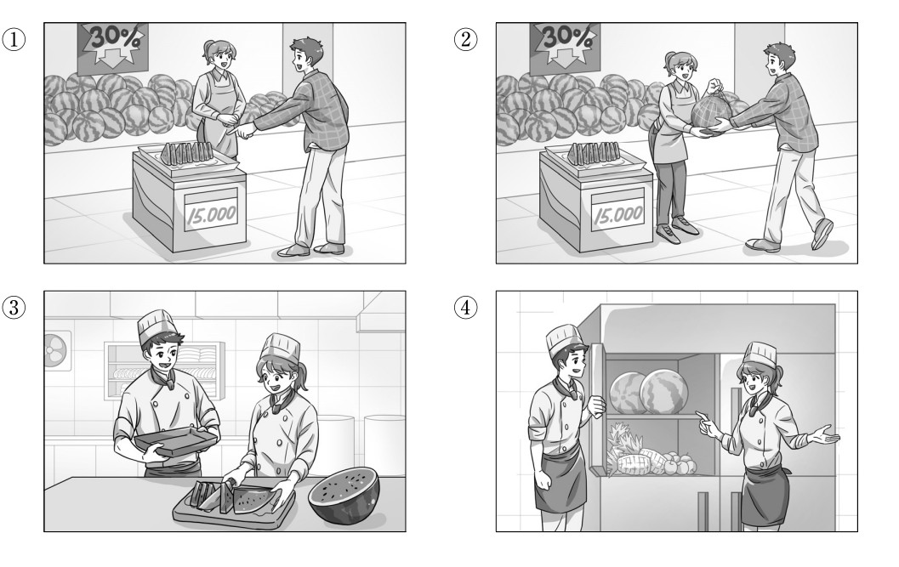
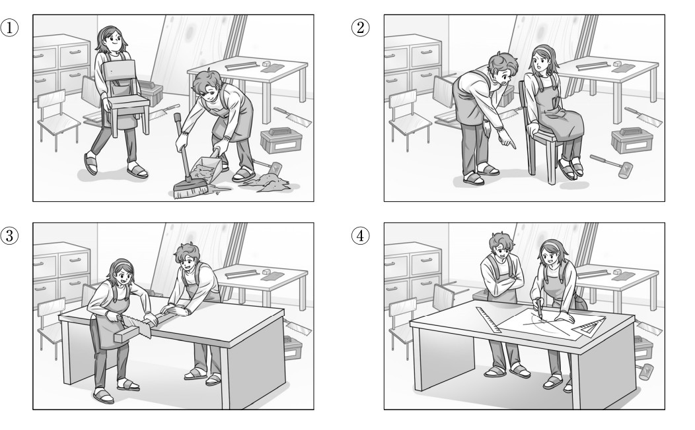

👨 남자: 여기 접시 위에 있는 거 한번 먹어 봐도 돼요?
👩 여자: 그럼요. 드셔 보세요.
👨 Nam: Tôi có thể ăn thử một miếng dưa hấu được cắt sẵn trên chiếc đĩa này được không?
👩 Nữ: Dạ tất nhiên là được chứ ạ. Xin mời quý khách cứ tự nhiên nếm thử.
🎯 Phân tích đáp án
Tại sao chọn ①? Bối cảnh hội thoại được xác định diễn ra tại một quầy bán hoa quả siêu thị/chợ, đặc biệt là quầy bán dưa hấu. Trọng tâm của cuộc đối thoại là việc người nam chỉ vào đĩa dưa hấu cắt sẵn (여기 접시 위에 있는 거) và xin phép được nếm thử. Bức tranh số 1 phác họa chính xác bối cảnh này: Nhân viên nữ đang đứng sau quầy dưa hấu, trong khi người nam chỉ tay vào khay/đĩa dưa hấu đã được cắt nhỏ để xin ăn thử.
- Hình 2 sai vì mô tả cảnh người nữ đang ôm nguyên một quả dưa hấu lớn và trao tận tay cho người nam, hoàn toàn không khớp với chi tiết "ăn thử miếng dưa trên đĩa" (접시 위에 있는 거 먹어 봐도 돼요).
- Hình 3 & 4 sai vì bối cảnh là bên trong khu vực nhà bếp công nghiệp (nhân viên mặc đồng phục bếp, đội mũ đầu bếp) và hai người đang chế biến/kiểm tra dưa hấu trong tủ lạnh, sai lệch hoàn toàn so với bối cảnh tương tác mua bán giữa khách hàng và người bán.

👩 여자: 오, 잘 만들었다. 그런데 나한텐 좀 높은 거 같아.
👨 남자: 그래? 그럼 이 부분을 조금 더 잘라야겠다.
👩 Nữ: Ồ, cậu đóng chiếc ghế này khéo tay quá. Nhưng mà tớ cảm giác nó có vẻ hơi cao so với chiều cao của tớ thì phải.
👨 Nam: Vậy sao? Nếu thế thì chắc tớ phải tiến hành cưa ngắn phần chân ghế này đi một chút nữa rồi.
🎯 Phân tích đáp án
Tại sao chọn ②? Đoạn hội thoại miêu tả một xưởng mộc, nơi người nam vừa đóng xong một chiếc ghế và nhờ người nữ ngồi thử (의자에 앉아 보니까 어때). Người nữ đang ngồi trên ghế và phản hồi rằng ghế bị cao (좀 높은 거 같아). Ngay sau đó, người nam đưa ra quyết định sẽ cắt bớt độ cao đi (이 부분을 조금 더 잘라야겠다). Hình số 2 phản ánh chuẩn xác nhất chuỗi hành động này: Người nữ đang yên vị trên chiếc ghế gỗ, còn người nam khom lưng, lấy tay chỉ vào phần chân ghế để đo đạc chuẩn bị cưa bớt.
- Hình 1 sai vì mô tả cảnh người nữ đang tự mình bưng bê, di chuyển chiếc ghế đi nơi khác, trong khi người nam đang hốt rác/mùn cưa.
- Hình 3 sai vì mô tả cảnh hai người đang cùng nhau cưa một khúc gỗ trên bàn làm việc, người nữ không hề ngồi lên chiếc ghế thành phẩm.
- Hình 4 sai vì mô tả cảnh hai người đang đứng thảo luận và đo đạc trên một bản vẽ thiết kế trải trên bàn, không có sự xuất hiện của hành động "ngồi thử lên ghế".

🎯 Phân tích đáp án
Tại sao chọn ②? Bản tin cung cấp một dữ kiện định lượng cực kỳ quan trọng về xu hướng sử dụng dịch vụ: "최근 4년간 이용자가 꾸준히 증가하고 있습니다" (Số lượng người dùng dịch vụ LIÊN TỤC GIA TĂNG MỘT CÁCH ĐỀU ĐẶN trong 4 năm gần đây). Để phản ánh xu hướng này, biểu đồ đường (Line graph) phải thể hiện một đường thẳng có đồ thị luôn hướng đi lên qua các năm (từ 2020 đến 2023). Biểu đồ ở Hình số 2 biểu diễn chính xác mũi tên hướng lên liên tục này.
- Hình 1 sai vì biểu đồ đường này lại thể hiện xu hướng giảm dần (từ 2020 đến 2022) rồi mới bất ngờ tăng vọt lên ở năm 2023. Xu hướng đồ thị hình chữ V này trái ngược hoàn toàn với dữ kiện "Tăng trưởng liên tục đều đặn" (꾸준히 증가).
- Hình 3 & 4 sai vì đây là dạng biểu đồ hình tròn (Pie chart) thể hiện dữ liệu về "Lý do sử dụng dịch vụ" (서비스를 이용하는 이유). Dựa theo bản tin, thứ hạng lý do phải là: Hạng 1 "Tươi và chất lượng" (신선하고 품질이 좋아서), Hạng 2 "Giá cả hợp lý" (가격이 합리적이어서), Hạng 3 "Tiện lợi" (편리해서). Thế nhưng Hình 3 lại xếp "Tiện lợi" (36%) cao hơn "Giá cả" (21%), còn Hình 4 lại xếp "Giá cả" (43%) lên vị trí số 1. Cả hai biểu đồ tròn đều sai lệch số liệu thứ hạng.
👩 여자: 약국에서 약을 사다 먹었는데 잘 안 나아요.
👨 남자: _____________________________
👩 Nữ: Tôi đã mua thuốc ở hiệu thuốc về uống rồi mà bệnh tình mãi vẫn chưa thấy thuyên giảm chút nào cả.
👨 Nam: ( Nếu vậy thì cô thử sắp xếp đến bệnh viện khám một chuyến xem sao? )
- ① Cứ chủ quan như vậy là cô sẽ mắc bệnh cảm cúm mất đấy.
- ② Bệnh tình của cô nay đã khỏi hẳn rồi, thật là một điều vô cùng may mắn.
- ③ Nếu vậy thì cô thử sắp xếp đến bệnh viện khám một chuyến xem sao?
- ④ Chẳng phải nguyên nhân không khỏi bệnh là do cô lười không chịu uống thuốc hay sao?
🎯 Phân tích đáp án
Tại sao chọn ③? Người nữ phàn nàn về tình trạng sức khỏe không mấy khả quan: "약을 사다 먹었는데 잘 안 나아요" (Đã tự uống thuốc rồi nhưng bệnh VẪN CHƯA THUYÊN GIẢM). Đứng trước tình huống việc tự điều trị tại nhà (mua thuốc ngoài) không mang lại hiệu quả, phản ứng tự nhiên và thiết thực nhất của người quan tâm là đưa ra một lời khuyên hướng đến cơ sở y tế chuyên nghiệp. Lời đề nghị "병원에 한번 가 보지 그래요?" (Vậy cô hãy thử đến bệnh viện khám xem sao?) đáp ứng hoàn hảo chức năng giao tiếp khuyên nhủ này.
- ① Sai vì người nữ ĐÃ ĐANG BỊ CẢM RỒI (감기는 좀 어때요?). Việc đưa ra lời cảnh báo "Sẽ bị mắc bệnh cảm mất đấy" (감기 걸릴 거예요 - dùng thì tương lai) là sai lệch bối cảnh.
- ② Sai vì người nữ vừa mới khẳng định là "Bệnh CHƯA KHỎI" (잘 안 나아요). Câu cảm thán "May quá bệnh đã khỏi hẳn" (다 나아서 다행이에요) là sự mâu thuẫn hoàn toàn với thực tế.
- ④ Sai vì người nữ đã xác nhận là BẢN THÂN ĐÃ UỐNG THUỐC RỒI (약을 사다 먹었는데). Việc người nam quay ra buộc tội "Do không uống thuốc nên mới không khỏi" (약을 안 먹어서 그런 거) là sự vô lý và thiếu chú ý lắng nghe.
👨 남자: 토요일은 약속이 있고 일요일은 괜찮아.
👩 여자: _____________________________
👨 Nam: Lịch thứ Bảy tớ có hẹn mất rồi, còn Chủ nhật thì tớ hoàn toàn rảnh rỗi (không vướng bận gì).
👩 Nữ: ( Nếu vậy thì tớ sẽ chốt đặt lịch hẹn vào ngày Chủ nhật nhé. )
- ① Nếu vậy thì tớ sẽ chốt đặt lịch hẹn (cho chúng ta) vào ngày Chủ nhật nhé.
- ② Tớ hoàn toàn vẫn chưa chốt được cuộc hẹn hay lịch trình nào cả.
- ③ Lớp học trải nghiệm làm gốm đã chính thức được bắt đầu rồi.
- ④ Trước mắt thì tớ đã hẹn sẽ gặp mặt vào lúc 2 giờ chiều.
🎯 Phân tích đáp án
Tại sao chọn ①? Người nữ chủ động tham khảo ý kiến để chốt lịch đi trải nghiệm. Người nam đã cung cấp thông tin lịch trình cá nhân cực kỳ rõ ràng: "토요일은 약속이 있고 일요일은 괜찮아" (Thứ Bảy vướng lịch rồi, Chủ nhật thì RẢNH (OK)). Đứng trước việc đối phương đã bật đèn xanh cho ngày Chủ nhật, hành động tiếp theo của người phụ trách (người nữ) là đưa ra quyết định dựa trên mốc thời gian đó. Câu nói "그럼 일요일로 예약할게" (Nếu vậy thì tớ sẽ chốt đặt lịch vào Chủ nhật nhé) thể hiện sự chốt hạ thời gian một cách logic và hoàn hảo.
- ② Sai vì hai người ĐÃ CHỐT HẸN LÀ SẼ ĐI RỒI (도자기 체험 가기로 한 거), vấn đề hiện tại chỉ là đang tìm NGÀY GIỜ CỤ THỂ (언제 갈까). Việc người nữ tự chối bỏ "Tôi chưa hẹn gì cả" (약속을 하지도 않았어) là sai logic.
- ③ Sai vì cả hai người VẪN CHƯA ĐẶT ĐƯỢC LỊCH (언제 갈까), chưa quyết định xong ngày giờ thì không thể có chuyện "Lớp học ĐÃ BẮT ĐẦU RỒI" (수업을 시작했어).
- ④ Sai vì người nam TỪ CHỐI THỨ BẢY VÀ ĐỀ XUẤT CHỦ NHẬT. Nếu người nữ trả lời "Tớ đã hẹn gặp lúc 2 giờ" mà KHÔNG ĐÍNH KÈM thông tin là ngày nào (thứ Bảy hay Chủ nhật) thì sẽ khiến cuộc hội thoại bị lơ lửng, không chốt được vấn đề trọng tâm là "Ngày nào". Hơn nữa, việc tự ý quyết giờ khi đối phương vừa mới cho biết lịch rảnh là thiếu tự nhiên.
👩 여자: (놀라며) 어, 근데 음료수는 못 갖고 들어가나 봐.
👨 남자: _____________________________
👩 Nữ: (Giật mình ngạc nhiên) Ơ kìa, nhưng mà có vẻ như quy định ở đây không cho phép khách cầm theo đồ uống bước vào bên trong đâu.
👨 Nam: ( Đúng là vậy thật nhỉ. Thôi chúng ta mau chóng uống cho xong rồi hẵng đi vào nhé. )
- ① Không đâu. Phần đó cứ để tớ chủ động chuẩn bị cho.
- ② Đúng là vậy thật nhỉ. Thôi chúng ta mau chóng uống cho xong rồi hẵng đi vào nhé.
- ③ Không phải đâu. Vị trí của phòng triển lãm không hề xa xôi chút nào.
- ④ Cậu nói đúng. Chúng ta phải ưu tiên đi mua đồ uống trước đã.
🎯 Phân tích đáp án
Tại sao chọn ②? Bối cảnh sự việc là hai người đang định vào phòng triển lãm nhưng người nữ bất ngờ phát hiện ra biển báo cấm mang theo đồ uống (음료수는 못 갖고 들어가나 봐). Lúc này, trên tay họ (hoặc một trong hai người) ĐANG CẦM ĐỒ UỐNG. Đứng trước lệnh cấm này, người nam cần phải đưa ra một giải pháp xử lý món đồ uống đó trước khi vào. Câu phản hồi "그러네. 얼른 마시고 들어가자" (Đúng vậy nhỉ. Chúng ta mau uống cho hết rồi hãy vào) vừa thể hiện sự đồng tình, vừa mang đến một giải pháp vô cùng hợp lý và tự nhiên.
- ① Sai vì vấn đề hiện tại là CẤM MANG ĐỒ UỐNG VÀO (못 갖고 들어가), chứ không phải là họ đang bị "Thiếu đồ uống" để mà người nam giành phần "Để tớ chuẩn bị đồ uống cho" (내가 준비할게).
- ③ Sai vì nội dung phản bác "Phòng triển lãm không xa đâu" (멀지는 않아) hoàn toàn chệch nhịp so với vấn đề "Bị cấm mang đồ uống" mà người nữ vừa đề cập.
- ④ CẨN THẬN BẪY LẬT NGƯỢC: Triển lãm đã có quy định CẤM ĐỒ UỐNG. Nếu người nam rủ rê "Ưu tiên đi mua đồ uống trước đã" (먼저 음료수부터 사자) thì họ sẽ cầm đồ uống đó đi đâu khi mà lát nữa không được phép mang vào triển lãm? Đây là hành vi thiếu logic trầm trọng.
👨 남자: 아니. 오늘까지 알려 준다고 했는데 소식이 없네. 벌써 세 시인데.......
👩 여자: _____________________________
👨 Nam: Vẫn chưa thấy gì cả. Họ đã hứa là sẽ thông báo kết quả chậm nhất là vào ngày hôm nay, thế mà mãi vẫn bặt vô âm tín. Đã 3 giờ chiều rồi mà...
👩 Nữ: ( Ngày hôm nay vẫn chưa kết thúc mà, cậu cứ kiên nhẫn chờ đợi thêm xem sao. )
- ① Bài thi phỏng vấn ngày hôm nay cậu nhất định phải thể hiện cho thật tốt đấy nhé.
- ② Cậu đã xin được việc làm nhanh như vậy rồi sao, xin gửi lời chúc mừng chân thành đến cậu.
- ③ Cậu nhớ phải gọi điện liên lạc cho tớ trước khi đến công ty đấy nhé.
- ④ Ngày hôm nay vẫn chưa kết thúc mà, cậu cứ kiên nhẫn chờ đợi thêm xem sao.
🎯 Phân tích đáp án
Tại sao chọn ④? Người nam đang rơi vào trạng thái sốt ruột và vô cùng lo lắng vì mốc thời gian "hôm nay" (오늘까지) sắp trôi qua mà công ty vẫn chưa báo kết quả, đặc biệt là khi đồng hồ đã điểm "3 giờ chiều" (벌써 세 시인데). Đứng trước tâm trạng bồn chồn của bạn mình, người nữ cần đưa ra một lời an ủi, động viên hợp lý. Lời khuyên "아직 시간이 있으니까 기다려 봐" (Vẫn còn thời gian mà (chưa hết giờ hành chính), cậu cứ chờ thêm xem sao) là một liều thuốc tinh thần hoàn hảo, giúp xoa dịu sự lo ắng và duy trì hy vọng cho người nam.
- ① Sai vì người nam ĐÃ HOÀN TẤT VIỆC PHỎNG VẤN TỪ TUẦN TRƯỚC RỒI (지난주에 면접 본). Lời cổ vũ "Hôm nay thi tốt nhé" là hoàn toàn lệch mốc thời gian.
- ② Sai vì người nam VẪN ĐANG MÒN MỎI ĐỢI CHỜ KẾT QUẢ (소식이 없네). Việc vội vàng chúc mừng "Đã xin được việc" (취업했다니 축하해) là một sự trớ trêu và ảo tưởng.
- ③ Sai vì hiện tại người nam đang "Ngồi ở nhà/Nơi khác để ngóng điện thoại của công ty gọi đến", chứ anh ta KHÔNG CÓ LỊCH TRÌNH DI CHUYỂN ĐẾN CÔNG TY (회사에 도착) nào trong ngày hôm nay cả.
👨 남자: 이런 바지는 줄이면 아랫부분 모양이 좀 달라지는데, 괜찮으세요?
👩 여자: _____________________________
👨 Nam: Đặc thù của loại quần như thế này là nếu cắt ngắn đi thì form dáng của phần gấu quần sẽ bị biến dạng thay đổi một chút, cô cảm thấy như vậy có ổn không?
👩 Nữ: ( Xin hỏi liệu form dáng của nó có bị biến đổi trở nên quá kỳ cục không ạ? )
- ① Tôi có cảm giác là chiếc quần đã bị cắt ngắn đi quá đà rồi thì phải.
- ② Xin chân thành cảm ơn ông vì đã tiến hành sửa chữa chiếc quần vô cùng khéo léo.
- ③ Xin hỏi liệu form dáng của nó có bị biến đổi trở nên quá kỳ cục không ạ?
- ④ Cửa hàng mình có chiếc quần nào cùng mẫu mã này nhưng size lớn hơn một cỡ không ạ?
🎯 Phân tích đáp án
Tại sao chọn ③? Người thợ sửa quần áo (người nam) đưa ra một lời cảnh báo về hệ lụy kỹ thuật: Việc cắt ngắn sẽ làm thay đổi form dáng của gấu quần (모양이 좀 달라지는데). Sau đó, anh ta yêu cầu người nữ đưa ra quyết định (괜찮으세요?). Đứng trước rủi ro làm hỏng chiếc quần yêu thích, người nữ (khách hàng) chắc chắn sẽ nảy sinh sự hoang mang và do dự. Phản ứng hợp lý nhất là đặt câu hỏi ngược lại để đánh giá mức độ nghiêm trọng của sự thay đổi trước khi đưa ra quyết định cuối cùng. Câu hỏi "혹시 모양이 많이 이상해질까요?" (Liệu form dáng có bị kỳ cục đi nhiều không ạ?) là một phản xạ tâm lý hoàn toàn tự nhiên và chính xác.
- ① Sai vì người thợ CHƯA HỀ CẦM KÉO LÊN CẮT (길이를 좀 줄여 주실 수 있나요? - Mới đang HỎI NHỜ CẮT). Sự việc chưa xảy ra nên không thể phán xét "Ông cắt bị quá ngắn rồi" (짧게 줄인 것 같아요) được.
- ② Sai vì như đã phân tích, CÔNG ĐOẠN SỬA CHỮA CHƯA ĐƯỢC TIẾN HÀNH. Lời cảm ơn "Đã sửa xong rất khéo" (수선을 잘해 주셔서) là sai tiến độ thời gian trầm trọng.
- ④ Sai vì người nữ đang mang một CHIẾC QUẦN CÓ SẴN (이 바지) đến tiệm may để NHỜ SỬA CẮT NGẮN CHIỀU DÀI. Ông chú thợ may không phải là nhân viên bán hàng thời trang để mà hỏi "Có mẫu này size to hơn không?" (한 치수 큰 거 없어요?).
👨 남자: 그래. 그런데 내가 수업이 있어서 곧 나가야 하는데 지금 올래?
👩 여자: 응. 지금 바로 가지러 갈게. 고마워.
👨 남자: 그럼 가방 꺼내 놓을게.
👨 Nam: Được chứ, không thành vấn đề. Thế nhưng tớ chuẩn bị có tiết học nên sắp phải di chuyển ra ngoài rồi, cậu qua lấy ngay bây giờ luôn được không?
👩 Nữ: Ừ. Tớ sẽ tức tốc qua lấy ngay bây giờ đây. Cảm ơn cậu nhiều nhé.
👨 Nam: Nếu vậy thì tớ sẽ chủ động lấy sẵn chiếc vali ra ngoài chờ cậu.
- ① Bắt đầu lên đường đi du lịch.
- ② Đi tham gia và lắng nghe tiết học.
- ③ Thực hiện thao tác lấy chiếc vali ra ngoài.
- ④ Khẩn trương di chuyển đi để lấy chiếc vali.
🎯 Phân tích đáp án
Tại sao chọn ④? Câu hỏi yêu cầu xác định "Hành động TIẾP THEO của người nữ". Ở nửa sau cuộc hội thoại, người nam đã đưa ra một yêu cầu thúc giục về thời gian: "지금 올래?" (Cậu qua lấy bây giờ được không?). Người nữ đã lập tức đồng ý và đưa ra lời cam kết hành động: "응. 지금 바로 가지러 갈게" (Ừ. TỚ SẼ ĐI LẤY NGAY BÂY GIỜ ĐÂY). Do đó, hành vi vật lý bắt buộc mà cô ấy phải thực hiện sau khi tắt điện thoại chính là Di chuyển đến nhà người nam để lấy vali (가방을 가지러 간다). Đáp án ④ phản chiếu hoàn toàn chính xác thông tin này.
- ① Sai vì lịch trình đi du lịch của người nữ được ấn định là NGÀY MAI (내일 여행 가는데), không phải là hành động diễn ra "Ngay lập tức tiếp theo" sau cuộc gọi này.
- ② Sai vì lịch trình "Có tiết học" (수업이 있어서) là của NGƯỜI NAM, cô gái không có tiết học nào cả.
- ③ Sai vì nhiệm vụ "Lấy sẵn vali ra" (가방 꺼내 놓을게) đã được NGƯỜI NAM chủ động nhận lãnh thực hiện trong lúc chờ người nữ chạy tới.
👩 여자: 이게 요즘 많이 팔리는 건데 한번 발라 보세요.
👨 남자: 음. 향기도 좋고 부드럽네요. 이걸로 하나 포장해 주세요.
👩 여자: 네. 계산 먼저 해 드릴 테니까 이쪽으로 오세요.
👩 Nữ: Dòng sản phẩm này hiện đang là mặt hàng bán rất chạy dạo gần đây, anh hãy thử bôi một chút lên da xem sao ạ.
👨 Nam: Ừm. Mùi hương rất dễ chịu và chất kem cũng rất mềm mịn nữa. Phiền cô vui lòng đóng gói lại cho tôi một chai loại này nhé.
👩 Nữ: Vâng ạ. Tôi sẽ tiến hành thao tác thanh toán cho anh trước, mời anh di chuyển qua hướng này ạ.
- ① Trực tiếp bôi thử sữa dưỡng da lên người.
- ② Tiến hành thao tác thanh toán tiền cho khách hàng.
- ③ Thực hiện công đoạn bọc gói lọ sữa dưỡng da thành quà tặng.
- ④ Đem món quà vừa mua về trao tặng cho người bố.
🎯 Phân tích đáp án
Tại sao chọn ②? Yêu cầu tìm "Hành động TIẾP THEO của người nữ". Ở cuối cuộc giao dịch, người nam (khách hàng) yêu cầu nhân viên nữ gói hàng (포장해 주세요). Tuy nhiên, người nữ đã chủ động thiết lập lại quy trình làm việc: "계산 먼저 해 드릴 테니까 이쪽으로 오세요" (Tôi sẽ thanh toán tiền cho anh TRƯỚC TIÊN, mời anh qua đây). Do đó, hành động ưu tiên số 1 mà cô ấy sẽ làm ngay lập tức lúc này là Tiến hành thanh toán tiền cho khách (계산을 해 준다), sau đó mới đi gói hàng. Đáp án ② là sự lựa chọn duy nhất tuân thủ thứ tự này.
- ① Sai vì hành động "Bôi thử kem" (한번 발라 보세요) là hành động của NGƯỜI NAM (KHÁCH HÀNG), và anh ta ĐÃ BÔI THỬ XONG RỒI mới quyết định chốt đơn mua (음. 향기도 좋고...).
- ③ CẨN THẬN BẪY TRÌNH TỰ: Khách hàng có yêu cầu gói quà (포장해 주세요), nhưng nhân viên nữ nhấn mạnh là "PHẢI THANH TOÁN TIỀN (계산) TRƯỚC ĐÃ". Do đó, việc "Gói quà" (포장한다) sẽ bị đẩy lùi lại làm sau, không phải là hành động "Kế tiếp ngay lập tức".
- ④ Sai vì người mua quà và mang quà về "Tặng cho bố" là NGƯỜI NAM (아버지께 선물하려고). Nữ nhân viên bán hàng không có nghĩa vụ đi tặng quà cho bố của khách.
👨 남자: 수잔 어때? 수잔이 한국어를 잘하잖아.
👩 여자: 좋아. 내가 수잔한테 연락할게. 넌 대회 일정 좀 확실히 알아봐 줘.
👨 남자: 응. 확인하고 일정표 출력해 놓을게.
👨 Nam: Mời Susan thì sao? Năng lực tiếng Hàn của Susan xuất sắc lắm mà.
👩 Nữ: Ý kiến hay đấy. Tớ sẽ chủ động liên lạc cho Susan. Còn cậu thì chịu khó đi kiểm tra lại lịch trình thi đấu cho thật chính xác nhé.
👨 Nam: Ừ. Tớ sẽ tiến hành xác minh và in sẵn bảng lịch trình ra.
- ① Di chuyển đến hội trường thi đấu.
- ② Tiến hành kiểm tra và xác nhận lịch trình.
- ③ Thực hiện thao tác in ấn bảng lịch trình.
- ④ Tiến hành liên lạc cho Susan.
🎯 Phân tích đáp án
Tại sao chọn ④? Yêu cầu của câu hỏi là xác định "Hành động TIẾP THEO của người nữ". Trong cuộc hội thoại, hai người đã thống nhất việc phân công nhiệm vụ. Người nữ nhận trách nhiệm kết nối nhân sự: "내가 수잔한테 연락할게" (Tớ sẽ chủ động liên lạc cho Susan). Do đó, hành vi ngay lập tức tiếp theo mà cô ấy bắt buộc phải thực hiện là nhấc máy lên để Liên lạc với Susan (수잔에게 연락한다). Đáp án ④ phản ánh chính xác phân công này.
- ① Sai vì hiện tại họ mới đang ở giai đoạn CHIÊU MỘ THÀNH VIÊN VÀ XEM LỊCH THI. Cuộc thi chưa bắt đầu nên việc đi đến "hội trường thi đấu" (대회장에 간다) là sai tiến độ thời gian.
- ② và ③ Sai vì hai nhiệm vụ "Xác minh lịch trình" (일정을 확인한다) và "In ấn bảng lịch trình" (일정표를 출력한다) đã được phân công rõ ràng cho NGƯỜI NAM (넌 대회 일정 좀 확실히 알아봐 줘 / 응. 확인하고 일정표 출력해 놓을게) thực hiện.
👨 남자: 음. 제품 크기를 줄인 것에 대한 반응이 좋군요.
👩 여자: 네. 디자인을 다양화한 것도 좋았던 거 같습니다. 설문 결과를 가지고 바로 보고서 작성하겠습니다.
👨 남자: 그렇게 하세요. 금요일이 부서장 회의니까 그 전까지 주세요.
👨 Nam: Ừm. Động thái thu gọn kích thước sản phẩm có vẻ đã nhận được những phản hồi rất tích cực đấy nhỉ.
👩 Nữ: Vâng ạ. Việc đa dạng hóa thiết kế dường như cũng là một nước đi đúng đắn. Tôi sẽ dựa trên kết quả khảo sát này để lập tức bắt tay vào việc soạn thảo báo cáo ạ.
👨 Nam: Cô cứ tiến hành như vậy đi. Thứ Sáu này chúng ta có buổi họp các Trưởng phòng nên hãy cố gắng nộp lại cho tôi trước thời hạn đó nhé.
- ① Tham gia vào cuộc họp.
- ② Tiến hành soạn thảo văn bản báo cáo.
- ③ Tiến hành thực hiện việc khảo sát.
- ④ Nộp lại văn bản báo cáo.
🎯 Phân tích đáp án
Tại sao chọn ②? Đề bài yêu cầu tìm "Hành động TIẾP THEO của người nữ". Khi đang trao đổi về dữ liệu khảo sát, người nữ đã chủ động xin nhận nhiệm vụ tiếp theo: "설문 결과를 가지고 바로 보고서 작성하겠습니다" (Tôi sẽ dựa trên kết quả khảo sát để soạn thảo báo cáo ngay lập tức). Người nam đã duyệt (그렇게 하세요). Vì thế, hành động tiếp theo cô ấy bắt buộc phải về bàn làm việc và bắt tay vào Soạn thảo báo cáo (보고서를 작성한다). Đáp án ② là sự suy luận chuẩn xác.
- ① Sai vì "Cuộc họp Trưởng phòng" (부서장 회의) sẽ diễn ra vào THỨ SÁU (금요일), không phải là hành động "Kế tiếp ngay lập tức" sau đoạn hội thoại này.
- ③ Sai vì quá trình khảo sát ĐÃ ĐƯỢC HOÀN TẤT VÀ CÓ KẾT QUẢ RỒI (설문 결과입니다). Cô ấy không cần phải đi khảo sát lại nữa.
- ④ Sai vì cô ấy PHẢI VIẾT BÁO CÁO XONG THÌ MỚI CÓ CÁI ĐỂ NỘP. Hiện tại báo cáo chưa được viết (작성하겠습니다 - thì tương lai), nên không thể nào "Nộp báo cáo" (제출한다) ngay lập tức được.
👨 남자: 그러지 말고 가자. 저번에 비 올 때 가 봤는데 분위기가 좋더라고.
👩 여자: 정말? 난 비 오는 날 캠핑은 안 해 봤는데.
👨 남자: 텐트 안에서 듣는 빗소리가 얼마나 좋은데. 너도 분명 좋아할 거야.
👨 Nam: Đừng hủy, chúng ta cứ đi đi. Đợt trước tớ đã từng đi cắm trại dưới trời mưa rồi, bầu không khí lúc đó phải nói là cực kỳ tuyệt vời đấy.
👩 Nữ: Thật vậy sao? Cá nhân tớ thì chưa từng trải nghiệm cảm giác đi cắm trại vào ngày mưa bao giờ cả.
👨 Nam: Cảm giác được nằm trong lều và lắng nghe tiếng mưa rơi rả rích mang lại một sự chữa lành tuyệt diệu lắm. Chắc chắn cậu cũng sẽ vô cùng thích thú cho mà xem.
- ① Người nam đang có dự định ngày mai sẽ đi cắm trại một mình.
- ② Người nữ hoàn toàn không nắm bắt được thông tin về tình hình thời tiết ngày mai.
- ③ Người nam rất có hứng thú và yêu thích việc đi cắm trại vào những ngày trời mưa.
- ④ Người nữ đã từng có kinh nghiệm đi cắm trại vào một ngày trời mưa.
🎯 Phân tích đáp án
Tại sao chọn ③? Xuyên suốt cuộc hội thoại, người nam liên tục bày tỏ sự yêu thích đối với trải nghiệm cắm trại dưới mưa. Anh ta cố gắng thuyết phục người nữ: "비 올 때 가 봤는데 분위기가 좋더라고" (Đi lúc trời mưa BẦU KHÔNG KHÍ RẤT TUYỆT VỜI) và khen ngợi "텐트 안에서 듣는 빗소리가 얼마나 좋은데" (Tiếng mưa rơi nghe từ trong lều MỚI HAY LÀM SAO). Việc liên tục ca ngợi và khuyến khích đi cắm trại lúc mưa chứng minh nhận định: "Người nam thích cắm trại khi trời mưa (남자는 비가 올 때 하는 캠핑을 좋아한다)" là hoàn toàn chính xác.
- ① Sai vì người nam đang RỦ NGƯỜI NỮ ĐI CÙNG (그러지 말고 가자 - Đừng hủy, CHÚNG TA cứ đi đi), không phải là anh ta dự định "đi một mình" (혼자 가려고 한다).
- ② Sai vì chính người nữ là người CHỦ ĐỘNG THÔNG BÁO VỀ THỜI TIẾT (내일 비가 온다던데 - Ngày mai nghe nói mưa đấy). Việc đáp án phán cô ấy "chưa được nghe về thời tiết" (듣지 못했다) là ngược lại sự thật.
- ④ CẨN THẬN BẪY ĐỐI LẬP: Người nữ đã thú nhận sự thiếu kinh nghiệm của bản thân: "난 비 오는 날 캠핑은 안 해 봤는데" (Tớ CHƯA TỪNG cắm trại vào ngày mưa). Khẳng định "đã từng có kinh nghiệm" (캠핑을 한 적이 있다) là sai lệch lịch sử cá nhân.
- ① Siêu thị này mới chính thức mở cửa khai trương lần đầu tiên vào năm nay.
- ② Thời gian mở cửa hoạt động sẽ được kéo dài thêm trong suốt một tuần lễ.
- ③ Khu vực quầy thực phẩm không nằm trong danh mục được áp dụng chương trình giảm giá.
- ④ Siêu thị tiến hành phát quà tặng miễn phí cho tất cả mọi người khi bước chân vào cổng.
🎯 Phân tích đáp án
Tại sao chọn ②? Loa phát thanh thông báo chương trình khuyến mãi sẽ kéo dài "một tuần" (일주일 동안), và đi kèm với đó là một chính sách thay đổi giờ giấc: "이 기간에는 영업시간도 한 시간 연장하니" (Trong khoảng thời gian (một tuần) này, thời gian hoạt động cũng sẽ được KÉO DÀI THÊM (GIA HẠN) một tiếng). Cụm từ "연장하다" (Kéo dài/gia hạn) đồng nghĩa với "늘어난다" (Tăng lên). Do đó, nội dung "Trong vòng một tuần thời gian hoạt động sẽ tăng lên (일주일 동안 영업시간이 늘어난다)" là thông tin hoàn toàn chính xác.
- ① Sai vì loa phát thanh tuyên bố rõ ràng đây là lễ kỷ niệm "개업 10주년" (Kỷ niệm 10 NĂM KHAI TRƯƠNG). Nghĩa là siêu thị đã hoạt động được một thập kỷ, không phải là "Năm nay mới mở cửa lần đầu" (올해 처음 문을 열었다).
- ③ CẨN THẬN BẪY LẬT NGƯỢC: Khu vực CHÍNH THỨC ĐƯỢC GIẢM GIÁ lại chính là "식품 코너에서 (Tại quầy thực phẩm)". Việc đáp án ③ vu khống "Quầy thực phẩm bị LOẠI TRỪ khỏi chương trình giảm giá" (할인 행사에서 제외된다) là lừa đảo trắng trợn.
- ④ CẨN THẬN BẪY ĐIỀU KIỆN: Quà tặng chỉ được phát cho "5만 원 이상 구매하신 고객님들께" (Những khách hàng ĐÃ MUA SẮM TỪ 50.000 WON TRỞ LÊN). Việc đáp án ④ phán "Tặng quà cho TẤT CẢ mọi người cứ ghé siêu thị là được" (방문한 모든 사람들에게 선물을 준다) là sai điều kiện nhận quà.
- ① Tỷ lệ người dân đăng ký tham gia vào giải đấu này ở mức vô cùng ảm đạm và lèo tèo.
- ② Giải đấu này sẽ được kéo dài từ ngày hôm nay cho đến tận thời điểm tuần sau.
- ③ Giải đấu này tiến hành trao tặng huy chương cho tất cả mọi người đến tham gia.
- ④ Tại giải đấu này, người tham gia hoàn toàn có thể tận hưởng niềm vui thể thao mà không cần phải tranh đua thành tích.
🎯 Phân tích đáp án
Tại sao chọn ④? Lời bình luận bế mạc của bản tin đã đúc kết lại giá trị nhân văn cốt lõi của giải đua: "경쟁 없이 운동을 즐길 수 있어서 참가자들에게 긍정적 평가를 받았습니다" (Vì mang lại trải nghiệm có thể TẬN HƯỞNG THỂ THAO MÀ KHÔNG CẦN CẠNH TRANH (GANH ĐUA) nên đã nhận được đánh giá tích cực). Thông tin này trùng khớp hoàn hảo với diễn đạt ở đáp án ④: "이 대회는 경쟁하지 않고 경기를 즐길 수 있다 (Giải đấu này cho phép tận hưởng trận đấu mà không cần cạnh tranh)".
- ① CẨN THẬN BẪY LẬT NGƯỢC: Bản tin ca ngợi sự kiện có tới "이천 명 이상의 많은 시민이 참가한 가운데" (CÓ RẤT NHIỀU NGƯỜI DÂN (TRÊN 2.000 NGƯỜI) THAM GIA). Việc đáp án ① bôi nhọ rằng "Tỷ lệ tham gia thấp kém, lèo tèo" (참가율이 저조했다) là sai sự thật hoàn toàn.
- ② CẨN THẬN BẪY THỜI THỂ: Bản tin thông báo giải đấu ĐÃ KẾT THÚC THÀNH CÔNG RỒI (오늘... 성공적으로 마무리되었습니다). Đáp án ② lừa đảo bằng cách kéo giãn thời gian "Sẽ diễn ra từ nay đến tuần sau" (오늘부터 다음 주까지 진행된다) là ngược lại với thông báo bế mạc.
- ③ CẨN THẬN BẪY ĐIỀU KIỆN: Không phải cứ tới điểm danh là được huy chương. Điều kiện bắt buộc để lấy huy chương là "정해진 시간 안에 들어오면" (PHẢI CÁN ĐÍCH TRONG THỜI GIAN QUY ĐỊNH). Đáp án ③ phán bừa "Phát huy chương cho TẤT CẢ NGƯỜI THAM GIA" (모든 참가자들에게 메달을 준다) là vi phạm luật của giải đấu.
👩 여자: 저는 화재가 발생하면 바로 현장에 가서 최초 신고자에게 상황 설명을 듣습니다. 그리고 화재의 시작점을 찾아 흔적을 살피고 그것을 분석해 화재의 원인을 밝힙니다. 그 후에는 화재로 인해 어느 정도의 피해를 보았는지 피해 금액도 계산하고요.
👩 Nữ (Chuyên gia điều tra): Quy trình làm việc của tôi bắt đầu bằng việc lập tức có mặt tại hiện trường ngay khi đám cháy vừa bùng phát để tiến hành lấy lời khai từ người trình báo đầu tiên. Kế tiếp, tôi sẽ thực hiện công tác nghiệp vụ để khoanh vùng tìm ra điểm khởi phát ngọn lửa, thu thập các dấu vết để lại và đưa chúng vào phân tích nhằm phơi bày nguyên nhân gốc rễ dẫn đến hỏa hoạn. Và cuối cùng, tôi cũng kiêm luôn trọng trách thẩm định và thống kê các con số thiệt hại về mặt tài chính do ngọn lửa gây ra.
- ① Quy trình nghiệp vụ của người nữ sẽ chính thức khép lại ngay sau khi tìm ra nguyên nhân vụ cháy.
- ② Công đoạn thẩm định và tính toán số tiền thiệt hại do hỏa hoạn gây ra không nằm trong phạm vi nghiệp vụ của người nữ.
- ③ Người nữ tiến hành gặp gỡ người trình báo đầu tiên ở một nơi khác, sau đó mới di chuyển đến hiện trường.
- ④ Người nữ trực tiếp thực hiện công tác khoanh vùng tìm kiếm vị trí khởi phát ngọn lửa tại hiện trường.
🎯 Phân tích đáp án
Tại sao chọn ④? Chuyên gia điều tra hỏa hoạn (người nữ) đã liệt kê một cách vô cùng chi tiết về chuỗi nghiệp vụ chuyên môn của bản thân tại hiện trường: "그리고 화재의 시작점을 찾아 흔적을 살피고..." (Sau đó tôi TÌM KIẾM ĐIỂM BẮT ĐẦU CỦA ĐÁM CHÁY và xem xét dấu vết...). Khái niệm "Điểm bắt đầu của đám cháy" (화재의 시작점) đồng nghĩa hoàn toàn với "Nơi ngọn lửa bắt đầu bùng phát đầu tiên" (불이 처음 나기 시작한 곳). Do đó, đáp án ④ "여자는 현장에서 불이 처음 나기 시작한 곳을 찾는다 (Người nữ tìm kiếm nơi lửa bốc lên đầu tiên tại hiện trường)" là sự tái hiện chính xác 100% nghiệp vụ này.
- ① Sai vì sau khi tìm ra nguyên nhân (원인을 밝힙니다), công việc của cô vẫn CHƯA KẾT THÚC. Cô còn phải làm thêm một bước nữa là "Thống kê tính toán thiệt hại" (그 후에는... 피해 금액도 계산하고요).
- ② CẨN THẬN BẪY PHỦ ĐỊNH: Như đã phân tích, việc "Tính toán số tiền thiệt hại" (피해 금액 계산) chính là bước cuối cùng trong chuỗi CÔNG VIỆC CỦA CÔ ẤY. Đáp án ② phủ nhận điều này (업무가 아니다) là sai sự thật.
- ③ CẨN THẬN BẪY TRÌNH TỰ: Quy trình thực tế của cô là "ĐẾN HIỆN TRƯỜNG TRƯỚC RỒI MỚI GẶP NGƯỜI TRÌNH BÁO Ở ĐÓ" (현장에 가서 최초 신고자에게... 듣습니다). Việc đáp án ③ đảo lộn trật tự thành "Gặp người trình báo TRƯỚC rồi sau đó mới đến hiện trường" (최초 신고자를 만난 후에 현장을 방문한다) là sai quy trình phá án.
👩 여자: 아니. 난 아까 저녁을 많이 먹어서 배가 부르거든.
👨 남자: 그래? 난 먹을래. 팝콘이 있어야 영화관에 온 것 같지.
👩 Nữ: Tớ xin kiếu. Lúc nãy tớ nạp quá nhiều đồ ăn vào bữa tối rồi nên bây giờ bụng vẫn còn đang no căng đây.
👨 Nam: Vậy sao? Tớ thì vẫn sẽ mua ăn. Đi xem rạp thì phải có bỏng ngô nhâm nhi thì mới cảm nhận được trọn vẹn cái không khí đi rạp chiếu phim chứ.
- ① Bộc lộ khao khát muốn được tận hưởng không gian đi xem rạp chiếu phim một mình.
- ② Mang trong mình niềm khao khát muốn được nếm thử vô vàn những hương vị bỏng ngô đa dạng khác nhau.
- ③ Đưa ra quan điểm đánh giá vô cùng cao đối với trải nghiệm nhâm nhi bỏng ngô khi đi xem phim ngoài rạp.
- ④ Bộc lộ sở thích cá nhân rằng bản thân ưu tiên và hứng thú với việc xem phim tại nhà hơn là ra rạp.
🎯 Phân tích đáp án
Tại sao chọn ③? Yêu cầu tìm "Suy nghĩ trọng tâm của người Nam". Người nam là một tín đồ của văn hóa xem phim rạp, bất chấp người nữ từ chối ăn bỏng ngô vì no (배가 부르거든), anh ta vẫn kiên quyết phải mua bằng được. Lý do anh ta đưa ra mang tính chân lý cá nhân: "팝콘이 있어야 영화관에 온 것 같지" (Phải có bỏng ngô thì mới TẠO RA CẢM GIÁC LÀ ĐANG Ở RẠP CHIẾU PHIM CHỨ). Việc nâng tầm món bỏng ngô thành "linh hồn" của rạp chiếu phim chứng tỏ anh ta cực kỳ yêu thích trải nghiệm này. Nhận định "Sẽ rất tuyệt vời nếu được ăn bỏng ngô ở rạp chiếu phim (영화관에서 팝콘을 먹는 것이 좋다)" tóm gọn hoàn hảo tư tưởng này.
- ① Sai vì người nam đang đi xem phim CÙNG VỚI SU-MI (수미 너도 먹을 거지?), anh ta không hề hậm hực hay khó chịu đòi "Muốn đi xem một mình" (혼자 보러 가고 싶다).
- ② Sai vì đoạn thoại chỉ nhấn mạnh sự tồn tại của MÓN BỎNG NGÔ NÓI CHUNG (팝콘이 있어야), chứ anh ta không hề đứng trước quầy order phô trương đam mê ẩm thực "Tôi muốn ăn thử nhiều vị bỏng ngô đa dạng" (다양한 종류의 팝콘을 먹고 싶다).
- ④ Sai vì người nam đang rất háo hức đi xem RẠP CHIẾU PHIM (영화관에 온 것 같지). Lôi "Việc thích xem phim ở nhà hơn" (집에서 영화 보는 것을 더 좋아한다) vào đây là hoàn toàn trật lất so với bối cảnh.
👩 여자: 네. 저도 사과하고 싶은데 먼저 말 걸기가 힘드네요.
👨 남자: 메시지라도 보내 보세요. 시간이 지나면 오해가 더 커질 수도 있어요.
👩 Nữ: Vâng đúng vậy. Thâm tâm tôi cũng vô cùng muốn tạ lỗi với anh ấy, nhưng quả thực việc phải mở lời bắt chuyện trước là một rào cản quá khó khăn đối với tôi.
👨 Nam: Nếu không dám đối mặt trực tiếp thì cô hãy thử gửi một đoạn tin nhắn xem sao. Nếu cứ để thời gian trôi qua, e rằng những hiểu lầm sẽ ngày càng bị khoét sâu thêm đấy.
- ① Phương án tốt nhất là nên khẩn trương tiến hành việc nói lời xin lỗi một cách nhanh chóng.
- ② Cần thiết phải duy trì thói quen thường xuyên liên lạc và giữ kết nối với bạn bè.
- ③ Bộc lộ niềm khao khát muốn tìm ra một giải pháp để tháo gỡ những phiền muộn, trăn trở của bản thân.
- ④ Bộc lộ sự tự ti khi cho rằng bản thân luôn gặp khó khăn trong việc chủ động bắt chuyện với người khác.
🎯 Phân tích đáp án
Tại sao chọn ①? Cốt lõi tư tưởng của người nam nằm ở câu cảnh báo mang tính chất răn đe ở cuối bài: "시간이 지나면 오해가 더 커질 수도 있어요" (Nếu để thời gian trôi qua, hiểu lầm có thể LỚN THÊM ĐẤY). Lập luận "để lâu thì hỏng chuyện" này chính là một lời hối thúc khéo léo, ép buộc người nữ phải hành động ngay lập tức (như gửi tin nhắn). Việc hối thúc không được để mất thời gian mang hàm ý: "Tốt nhất là HÃY NHANH CHÓNG ĐI XIN LỖI (사과를 빨리하는 것이 좋다)". Đáp án ① là sự giải mã hoàn hảo thông điệp ẩn ý này.
- ② Sai vì mục đích gửi tin nhắn ở đây là để "GIẢI QUYẾT HIỂU LẦM / XIN LỖI" đối với một sự cố cụ thể, chứ người nam không hề đi thuyết giáo đạo lý sống "Phải chăm chỉ liên lạc kết nối với bạn bè" (자주 연락해야 한다).
- ③ CẨN THẬN BẪY CHỦ THỂ: Kẻ đang trăn trở, bế tắc (고민) vì không biết làm thế nào để xin lỗi chính là NGƯỜI NỮ (사과하고 싶은데... 힘드네요). Người nam đóng vai trò chuyên gia tư vấn ĐÃ ĐƯA RA GIẢI PHÁP RỒI (bảo nhắn tin đi). Anh ta không hề là kẻ bế tắc "Muốn đi tìm giải pháp" (해결 방법을 찾고 싶다).
- ④ CẨN THẬN BẪY CHỦ THỂ: Câu phàn nàn "Việc chủ động bắt chuyện trước là một sự mệt nhọc khó khăn" (먼저 말 걸기가 힘드네요 = 말을 거는 것이 힘들다) là lời thú tội của NGƯỜI NỮ. Đề bài yêu cầu tìm tư tưởng của người Nam.
👨 남자: 여행 갈 곳에 대해 찾아보고 있어. 자세히 공부하고 가려고.
👩 여자: 여행지에 가도 자료가 다 있을 텐데. 그렇게까지 준비해야 해?
👨 남자: 난 아는 만큼 즐길 수 있다고 생각해서. 최대한 조사해서 가고 싶어.
👨 Nam: Tớ đang tiến hành tra cứu thông tin về những địa điểm dự định sẽ đi du lịch. Tớ muốn nghiên cứu thật kỹ lưỡng mọi thứ trước khi xách balo lên đường.
👩 Nữ: Một khi đặt chân đến điểm du lịch thì ở đó kiểu gì chẳng trang bị sẵn đầy đủ cẩm nang tài liệu cho du khách tham khảo. Liệu cậu có thực sự cần thiết phải lao tâm khổ tứ chuẩn bị kỹ đến mức này không?
👨 Nam: Tớ luôn tâm niệm rằng mức độ hiểu biết sẽ tỷ lệ thuận với trải nghiệm tận hưởng của chúng ta. Vậy nên tớ khát khao phải khảo sát và thu thập thông tin một cách triệt để nhất có thể trước khi khởi hành.
- ① Định hướng du lịch là bắt buộc phải nhắm đến những địa danh đã có sẵn tiếng tăm và sự nổi tiếng.
- ② Bộc lộ mong muốn được tận hưởng một bầu không khí thư thái, nhàn nhã khi đặt chân đến điểm du lịch.
- ③ Bộc lộ nguyện vọng muốn thiết lập một chuyến du lịch đến những địa điểm có vị trí địa lý không quá xa xôi.
- ④ Giương cao quan điểm mong muốn tích lũy và trang bị một lượng kiến thức khổng lồ về điểm đến trước khi khởi hành.
🎯 Phân tích đáp án
Tại sao chọn ④? Chân lý du lịch của người nam được bộc lộ một cách đanh thép khi anh ta phản bác lại thái độ xuề xòa của người nữ: "난 아는 만큼 즐길 수 있다고 생각해서. 최대한 조사해서 가고 싶어" (Tớ nghĩ rằng càng HIỂU BIẾT thì sẽ càng tận hưởng được nhiều. Nên tớ muốn phải ĐIỀU TRA TỐI ĐA rồi mới đi). Khao khát được điều tra và trang bị kiến thức trước chuyến đi chính là minh chứng rõ nét cho tư tưởng: "Dự định phải tìm hiểu THẬT NHIỀU về điểm đến trước khi đi (여행지에 대해 많이 알고 가려고 한다)". Đáp án ④ lột tả chính xác 100% tâm lý của người nam.
- ① Sai vì người nam chỉ quan tâm đến việc TỰ MÌNH KHẢO SÁT KIẾN THỨC VỀ NƠI ĐÓ (자세히 공부하고), chứ anh ta không hề đưa ra tiêu chí kệch cỡm "Phải đi mấy chỗ NỔI TIẾNG (유명한 곳) thì mới chịu".
- ② Sai vì đoạn hội thoại tập trung vào công đoạn CHUẨN BỊ TRƯỚC CHUYẾN ĐI (준비해야 해?). Không có nội dung nào miêu tả viễn cảnh mơ mộng "Sẽ sống thư thái / nhàn nhã" (여유롭게 지내면) khi đã đến nơi cả.
- ③ Sai vì khoảng cách địa lý (xa hay gần) HOÀN TOÀN KHÔNG ĐƯỢC NHẮC ĐẾN. Phán đoán anh ta "Chỉ muốn đi chỗ nào GẦN GẦN/KHÔNG XA" (멀지 않은 곳) là một sự suy diễn vô căn cứ.
👨 남자: 네. 요즘 책을 읽기 싫어하는 아이들이 많잖아요. 동요로 접했던 걸 책으로 읽으면 아이들이 부담 없이, 재미있게 책을 읽을 수 있을 것 같았어요. 그걸 시작으로 독서의 즐거움을 느낄 수 있으면 좋겠고요. 어렸을 때 독서에 대한 흥미를 갖는 것이 중요하니까요.
👨 Nam (Tác giả): Vâng đúng vậy. Thực trạng đáng buồn ngày nay là có rất nhiều trẻ em mang tâm lý ác cảm và chán ghét việc đọc sách. Tôi nung nấu một ý niệm rằng, nếu chúng ta để những đứa trẻ được tiếp cận văn bản thông qua những giai điệu đồng dao vốn dĩ đã quá đỗi quen thuộc với chúng, thì có lẽ chúng sẽ có thể tận hưởng việc đọc sách một cách vô cùng thú vị và hoàn toàn không bị áp lực. Tôi chỉ hy vọng rằng, lấy điểm tựa xuất phát từ cuốn sách này, bọn trẻ sẽ có thể tự mình cảm nhận được những niềm vui sướng mà việc đọc sách mang lại. Bởi lẽ, việc kiến tạo và gieo mầm sự hứng thú đối với sách vở ngay từ thuở ấu thơ là một sứ mệnh mang tầm vóc vô cùng quan trọng.
- ① Tác giả ôm ấp một niềm kỳ vọng rằng những đứa trẻ sẽ có thể xem việc đọc sách là một niềm vui thú vị.
- ② Cần thiết phải tăng cường năng suất để xuất bản thêm thật nhiều đầu sách phục vụ cho đối tượng trẻ em.
- ③ Thị trường xuất bản cần phải tung ra thêm đa dạng các chủng loại truyện cổ tích nhằm phục vụ cho trẻ em.
- ④ Sẽ thật tuyệt vời nếu như các không gian vật lý chuyên biệt phục vụ cho việc đọc sách của trẻ em được gia tăng mở rộng.
🎯 Phân tích đáp án
Tại sao chọn ①? Tác giả (người nam) đã bộc bạch tấm chân tình và động cơ đằng sau việc xuất bản sách ở những câu cuối cùng: "아이들이 부담 없이, 재미있게 책을 읽을 수 있을 것 같았어요" (Tôi nghĩ rằng bọn trẻ sẽ có thể đọc sách một cách THÚ VỊ mà không bị áp lực). Sau đó, ông bồi thêm một câu kết luận khát khao: "그걸 시작으로 독서의 즐거움을 느낄 수 있으면 좋겠고요" (Mong rằng thông qua việc này, chúng sẽ CẢM NHẬN ĐƯỢC NIỀM VUI CỦA VIỆC ĐỌC SÁCH). Khao khát muốn trẻ em tận hưởng niềm vui sách vở này trùng khớp 100% với đáp án ①: "Mong lũ trẻ coi việc đọc sách là một niềm vui (아이들이 독서를 즐겁게 생각하면 좋겠다)".
- ② Sai vì tác giả đang bàn về "CHẤT LƯỢNG TIẾP CẬN" (Làm sao để sách trở nên thú vị với trẻ lười đọc). Ông không hề đứng trên góc độ vĩ mô đòi hỏi ngành xuất bản phải "Chạy KPI xuất bản THẬT NHIỀU sách" (책을 많이 출판해야 한다).
- ③ CẨN THẬN BẪY TỪ VỰNG: Thể loại mà ông chuyển thể thành sách là ĐỒNG DAO/BÀI HÁT THIẾU NHI (동요). Việc đáp án ③ râu ông nọ cắm cằm bà kia, kêu gọi tung ra thêm nhiều "Truyện cổ tích" (동화) là sai đặc tính thể loại.
- ④ Sai vì giải pháp của tác giả là "Làm nội dung sách thú vị hơn", hoàn toàn KHÔNG ĐÁ ĐỘNG GÌ ĐẾN CƠ SỞ VẬT CHẤT kiểu như: Phải mở rộng thêm diện tích phòng đọc thư viện (독서할 수 있는 공간이 늘어나면).
👨 남자: 지금 디자인이 현실감 있고 좋은데요. 제작 초기부터 많은 논의 끝에 나온 건데 수정하는 문제는 좀 신중해야 할 것 같아요.
👩 여자: 우리 게임은 만화 같은 분위기인데 캐릭터가 너무 사실적이라서 좀 안 어울리지 않아요? 아직 출시도 좀 남았는데.......
👨 남자: 필요하다면 부분적으로 손을 볼 수는 있겠지만 많은 변화를 주는 건 부담이 클 것 같아요.
👨 Nam: Thiết kế hiện tại trông rất chân thực và tôi thấy rất ổn mà. Nó là thành quả được chốt lại sau vô vàn những cuộc thảo luận ngay từ giai đoạn đầu chế tác, nên đối với vấn đề chỉnh sửa, tôi nghĩ chúng ta cần phải hết sức thận trọng.
👩 Nữ: Bầu không khí trong tựa game của chúng ta mang đậm phong cách hoạt hình, thế nên việc tạo hình nhân vật quá đỗi chân thực chẳng phải là hơi lạc quẻ và không ăn nhập sao? Vẫn còn một khoảng thời gian nữa mới đến ngày ra mắt mà...
👨 Nam: Nếu thực sự cần thiết thì chúng ta có thể tinh chỉnh lại một phần, thế nhưng việc tạo ra những sự thay đổi lớn có lẽ sẽ mang lại rủi ro và gánh nặng rất lớn đấy.
- ① Sẽ rất tuyệt vời nếu như chúng ta kiến tạo ra tạo hình các nhân vật trong game thật dễ thương.
- ② Cần thiết phải ủy thác và yêu cầu các doanh nghiệp chuyên nghiệp thiết kế tạo hình nhân vật.
- ③ Bắt buộc phải khẩn trương chốt hạ tạo hình nhân vật để nhanh chóng tung tựa game ra thị trường.
- ④ Nếu có thể, bản thân vô cùng khao khát được duy trì và giữ nguyên bản thiết kế nhân vật ở thời điểm hiện tại.
🎯 Phân tích đáp án
Tại sao chọn ④? Yêu cầu tìm "Suy nghĩ trọng tâm của người Nam". Xuyên suốt cuộc hội thoại, người nam (đại diện cho phe thiết kế/bảo thủ) liên tục bảo vệ bản thiết kế gốc. Anh ta khen ngợi: "지금 디자인이 현실감 있고 좋은데요" (Thiết kế hiện tại rất chân thực và tốt mà). Khi người nữ gây sức ép đòi đổi sang phong cách dễ thương, anh ta đã chốt chặn bằng lý lẽ: "많은 변화를 주는 건 부담이 클 것 같아요" (Việc thay đổi quá nhiều sẽ là một gánh nặng rất lớn). Lập trường từ chối rủi ro và bảo vệ thiết kế cũ này chính là suy nghĩ: "Nếu có thể, muốn DUY TRÌ thiết kế nhân vật HIỆN TẠI (가능하면 현재의 캐릭터 디자인을 유지하고 싶다)". Đáp án ④ thâu tóm hoàn hảo tư tưởng này.
- ① CẨN THẬN BẪY ĐỐI LẬP: Việc "Làm cho nhân vật DỄ THƯƠNG HƠN" (귀엽게 만들면 좋겠다) là ý kiến được đề xuất trong cuộc họp và được NGƯỜI NỮ ỦNG HỘ. Người nam kịch liệt phản đối ý kiến này vì anh ta thích sự "chân thực" (현실감).
- ② Sai vì dự án đang được chính đội ngũ nội bộ của công ty TỰ THIẾT KẾ VÀ THẢO LUẬN (제작 초기부터 많은 논의 끝에 나온 건데 - Là thành quả thảo luận nội bộ từ đầu). Tuyệt đối không có việc "Thuê công ty chuyên nghiệp bên ngoài" (전문 업체에 요청) nào được nhắc đến.
- ③ Sai vì mâu thuẫn hiện tại là vấn đề ĐỔI HAY KHÔNG ĐỔI THIẾT KẾ (수정하는 문제). Không ai gào thét đòi "Phải nhanh chóng tung game ra thị trường" (빨리 게임을 출시해야 한다) cả. Thậm chí người nữ còn xác nhận là "Vẫn còn dư dả thời gian trước khi ra mắt" (출시도 좀 남았는데).
- ① Tựa game này đã chính thức được tung ra thị trường cách đây không lâu.
- ② Tạo hình của các nhân vật trong tựa game này mang đậm tính chất chân thực, giống với đời thực.
- ③ Cuộc họp bàn bạc về thiết kế nhân vật tính đến thời điểm hiện tại vẫn chưa được diễn ra.
- ④ Người nữ nhận định rằng tạo hình nhân vật hiện tại vô cùng ăn nhập và phù hợp với tựa game này.
🎯 Phân tích đáp án
Tại sao chọn ②? Người nữ đã trực tiếp xác nhận về phong cách thiết kế hiện tại của nhân vật: "캐릭터가 너무 사실적이라서 좀 안 어울리지 않아요?" (Vì tạo hình nhân vật QUÁ ĐỖI CHÂN THỰC nên chẳng phải là hơi lạc quẻ sao?). Cụm từ "너무 사실적이다" (Quá chân thực) đồng nghĩa hoàn toàn với "매우 사실적이다" (Rất chân thực). Do đó, đáp án ②: "이 게임의 캐릭터는 매우 사실적이다 (Nhân vật của game này rất chân thực)" là một sự tái hiện thông tin chính xác 100%.
- ① CẨN THẬN BẪY THỜI THỂ: Người nữ phàn nàn rằng "아직 출시도 좀 남았는데" (Vẫn CÒN ĐẦY THỜI GIAN MỚI ĐẾN LÚC RA MẮT cơ mà). Tức là game VẪN CHƯA RA MẮT. Việc đáp án ① phán "Mới ra mắt cách đây không lâu" (얼마 전에 출시되었다) là sai lệch mốc thời gian lịch sử.
- ③ CẨN THẬN BẪY LẬT NGƯỢC: Ngay câu đầu tiên, người nữ đã trích dẫn: "오늘 아침 회의에서 나온 의견 중에" (Trong số các ý kiến được đưa ra ở CUỘC HỌP SÁNG NAY). Rõ ràng là cuộc họp ĐÃ DIỄN RA XONG XUÔI RỒI. Đáp án ③ lấp liếm rằng "Chưa tiến hành họp" (아직 진행되지 않았다) là một sự dối trá.
- ④ CẨN THẬN BẪY ĐỐI LẬP: Người nữ thẳng thừng chê bai thiết kế nhân vật hiện tại là: "좀 안 어울리지 않아요?" (Chẳng phải là HƠI KHÔNG ĂN NHẬP (lạc quẻ) sao?). Cô ấy chê bai nó KHÔNG HỢP (안 어울리다) vì game mang phong cách hoạt hình mà nhân vật lại quá thực tế. Việc đáp án ④ bảo cô ấy nghĩ "Nhân vật ĂN NHẬP / PHÙ HỢP với game" (어울린다고 생각한다) là đảo ngược quan điểm của cô ấy.
👩 여자: 죄송합니다. 뭐가 잘못되어 있나요?
👨 남자: 첫 번째 전시실을 소개하는 영어 설명 중에 틀린 단어가 하나 있더라고요. 박물관에 외국인도 많던데 빨리 고쳐 주시면 좋겠어요.
👩 여자: 말씀해 주셔서 감사합니다. 바로 올라가서 확인해 보겠습니다.
👩 Nữ: Chúng tôi thành thật xin lỗi ạ. Xin hỏi có điểm nào bị sai sót vậy thưa quý khách?
👨 Nam: Trong phần thuyết minh bằng tiếng Anh giới thiệu về phòng triển lãm số một, tôi thấy có một từ vựng bị viết sai. Bảo tàng có rất đông du khách người nước ngoài ghé thăm, nên tôi mong ban quản lý hãy nhanh chóng tiến hành chỉnh sửa lại.
👩 Nữ: Rất cảm ơn quý khách đã phản ánh. Tôi sẽ lập tức đi lên đó và tiến hành kiểm tra ngay ạ.
- ① Đang tiến hành đặt trước lịch tham quan bảo tàng theo hình thức khách đoàn.
- ② Đang đặt câu hỏi để dò hỏi thông tin về thời gian mở cửa tham quan của bảo tàng.
- ③ Đang xác nhận lại thông tin về vị trí địa điểm nơi diễn ra cuộc triển lãm thường trực.
- ④ Đang đưa ra yêu cầu mong muốn ban quản lý hãy chỉnh sửa lại nội dung thuyết minh của phòng triển lãm.
🎯 Phân tích đáp án
Tại sao chọn ④? Xuyên suốt cuộc hội thoại, người nam đóng vai trò là một du khách đang phản ánh về lỗ hổng nghiệp vụ của bảo tàng. Anh ta vạch trần: "설명 내용에 잘못된 게 있어서요" (Nội dung thuyết minh bị viết sai) và đưa ra chỉ thị đanh thép: "빨리 고쳐 주시면 좋겠어요" (Tôi mong các vị hãy mau chóng CHỈNH SỬA lại nó đi). Việc phát hiện lỗi sai và đưa ra yêu cầu phải sửa lỗi chính là hành vi "Yêu cầu chỉnh sửa lại phần thuyết minh của phòng triển lãm (전시실의 설명을 수정해 달라고 요청하고 있다)". Đáp án ④ khái quát chính xác tuyệt đối hành động này.
- ① Sai vì người nam ĐÃ THAM QUAN XONG RỒI (관람하고 내려왔는데요), anh ta không hề có nhu cầu gọi điện thoại hay đến quầy để "Đặt lịch tham quan cho khách đoàn" (단체 관람을 예약) trong tương lai.
- ② Sai vì cuộc hội thoại thuần túy là việc PHẢN ÁNH LỖI SAI CHÍNH TẢ (틀린 단어가 하나 있더라고요). Không có bất kỳ câu hỏi nào thắc mắc về "Thời gian mở cửa mấy giờ, đóng cửa mấy giờ" (관람 시간에 대해 문의) cả.
- ③ Sai vì người nam ĐÃ BIẾT RÕ VÀ VỪA MỚI ĐI TỪ ĐÓ XUỐNG XONG (3층 상설 전시관에서... 내려왔는데요), anh ta rành đường đi nước bước, không cần phải đi "Xác nhận lại địa điểm tổ chức" (장소를 확인하고 있다) như những kẻ mù đường.
- ① Vị trí hiện tại của người nữ đang là ở trên tầng 3 của bảo tàng.
- ② Người nam đã hoàn tất việc tham quan khu triển lãm thường trực tại bảo tàng.
- ③ Tại các phòng triển lãm của bảo tàng này hoàn toàn vắng bóng các biển thuyết minh bằng tiếng Anh.
- ④ Số lượng du khách người nước ngoài lui tới tham quan bảo tàng này là rất khiêm tốn.
🎯 Phân tích đáp án
Tại sao chọn ②? Người nam đã tự chứng minh lịch sử di chuyển của bản thân ngay ở câu mở đầu: "방금 3층 상설 전시관에서 관람하고 내려왔는데요" (Tôi VỪA MỚI THAM QUAN khu triển lãm thường trực ở tầng 3 và đi xuống đây). Dữ kiện lịch sử này hoàn toàn tương thích và chứng thực độ chính xác 100% của đáp án ②: "Người nam ĐÃ THAM QUAN khu triển lãm thường trực tại bảo tàng (남자는 박물관에서 상설 전시회를 관람했다)".
- ① CẨN THẬN BẪY VỊ TRÍ: Người nam đã "Từ tầng 3 ĐI XUỐNG DƯỚI" (내려왔는데요) để gặp người nữ. Thêm vào đó, người nữ hứa hẹn: "바로 올라가서 확인해 보겠습니다" (Tôi sẽ ĐI LÊN TRÊN ĐÓ (Tầng 3) để kiểm tra). Điều này chứng tỏ vị trí hiện tại của người nữ đang Ở DƯỚI TẦNG 1 HOẶC 2, không phải là "Đang ở tầng 3" (3층에 있다) như đáp án vẽ ra.
- ③ CẨN THẬN BẪY PHỦ ĐỊNH: Người nam phản ánh về việc: "영어 설명 중에 틀린 단어가 하나 있더라고요" (Có một từ bị viết sai TRONG BẢN THUYẾT MINH TIẾNG ANH). Rõ ràng là CÓ thuyết minh tiếng Anh (chỉ là bị viết sai lỗi chính tả). Việc đáp án ③ vu khống "Hoàn toàn KHÔNG CÓ thuyết minh tiếng Anh" (영어 설명이 없다) là một sự dối trá trắng trợn.
- ④ CẨN THẬN BẪY LẬT NGƯỢC: Người nam viện cớ hối thúc ban quản lý sửa lỗi bằng sự thật: "박물관에 외국인도 많던데 빨리 고쳐 주시면 좋겠어요" (Bảo tàng CÓ RẤT ĐÔNG DU KHÁCH NGƯỜI NƯỚC NGOÀI, nên hãy mau sửa đi). Việc đáp án ④ phán "Người nước ngoài ÍT ĐẾN ĐÂY LẮM" (외국인들이 많이 오지 않는다) là đi ngược lại hoàn toàn với thực tế kinh doanh của bảo tàng.
👨 남자: 무엇보다 현장 대응력을 높이기 위한 훈련 덕분이라고 생각합니다. 이 지역은 번화한 곳이라서 사건, 사고가 많지요. 그래서 다른 곳에 비해 인력도 많은데 대부분 젊은 경찰관들입니다. 젊은 경찰관들은 아무래도 현장 경험이 부족하기 때문에 다양한 모의 상황을 만들어 현장 대응력을 강화하는 훈련을 반복해서 했습니다. 그렇게 하니까 실제 상황에서도 효과가 있었던 것 같습니다.
👨 Nam (Cảnh sát trưởng): Trên hết, tôi cho rằng thành quả này là nhờ vào công tác huấn luyện nhằm nâng cao năng lực ứng phó tại hiện trường. Do khu vực này là địa bàn sầm uất nên thường xuyên xảy ra các vụ án mạng và sự cố. Chính vì vậy, so với các khu vực khác, lực lượng nhân sự ở đây được bố trí đông đảo hơn, và đại đa số đều là những sĩ quan cảnh sát trẻ tuổi. Những cảnh sát trẻ dù sao cũng vẫn còn thiếu sót về mặt kinh nghiệm thực chiến, nên chúng tôi đã liên tục lặp đi lặp lại công tác huấn luyện tăng cường năng lực ứng phó bằng cách tạo ra đa dạng các tình huống mô phỏng. Nhờ việc tiến hành rèn luyện như vậy, nó đã phát huy tác dụng rất tốt ngay cả trong các tình huống thực tế.
- ① Vấn đề mang tính chất quan trọng sống còn là việc rèn luyện lặp đi lặp lại dựa trên các tình huống giả định mô phỏng thực tế.
- ② Đối với những khu vực là điểm nóng thường xuyên xảy ra sự cố, bắt buộc phải cung cấp và bố trí một nguồn nhân lực dồi dào.
- ③ Công tác huấn luyện bắt buộc phải được tiến hành và triển khai trong một bầu không khí tự do, cởi mở.
- ④ Mỗi khi phát sinh sự cố án mạng, tinh thần hiệp đồng tác chiến giữa các thành viên trong đội là yếu tố cực kỳ cần thiết.
🎯 Phân tích đáp án
Tại sao chọn ①? "Suy nghĩ trọng tâm" luôn nằm ở chìa khóa giải quyết vấn đề của nhân vật. Khi được hỏi về bí quyết thành công, Cảnh sát trưởng đã chốt hạ phương pháp đào tạo cốt lõi của đơn vị mình: "다양한 모의 상황을 만들어... 훈련을 반복해서 했습니다" (Tạo ra đa dạng các tình huống MÔ PHỎNG (Giả định) để HUẤN LUYỆN LẶP ĐI LẶP LẠI). Và ông khẳng định kết quả của nó: "그렇게 하니까 실제 상황에서도 효과가 있었던 것 같습니다" (Làm vậy thì sẽ có hiệu quả trong thực tế). Triết lý giáo dục "Huấn luyện lặp lại dựa trên tình huống mô phỏng/giả định" chính là: "Huấn luyện lặp lại dựa trên giả định tình huống thực tế là rất quan trọng (실제 상황을 가정한 반복 훈련이 중요하다)". Đáp án ① là sự đúc kết hoàn mỹ triết lý này.
- ② Sai vì Cảnh sát trưởng chỉ đưa ra một SỰ THẬT KHÁCH QUAN là "Khu vực này vốn đã được bố trí đông nhân lực rồi" (인력도 많은데), ông KHÔNG HỀ lên sóng truyền hình gào thét "Đòi hỏi chính phủ phải rót thêm quân số/nhân lực" (인력이 충분해야 한다) làm gì cả. Vấn đề của ông là lính trẻ thiếu kinh nghiệm, nên cần huấn luyện, chứ không phải thiếu lính.
- ③ Sai vì lực lượng cảnh sát là lực lượng vũ trang kỷ luật thép. Ông ấy áp dụng "HUẤN LUYỆN MÔ PHỎNG VÀ LẶP LẠI LIÊN TỤC" (훈련을 반복해서 했습니다), chứ ông ấy không hề mở lớp học mầm non đòi hỏi phải "Huấn luyện trong bầu không khí tự do, phóng khoáng" (자유로운 분위기에서 실시) như đáp án ③ bịa đặt.
- ④ Sai vì bí quyết thành công của ông ấy là KỸ NĂNG ỨNG PHÓ CÁ NHÂN (현장 대응력) được mài dũa qua huấn luyện. Trong toàn bộ bài diễn văn, ông tuyệt nhiên không nhắc đến một chữ nào về "Sự đoàn kết, tinh thần làm việc nhóm" (팀원 간의 협력이 필요하다) cả.
- ① Khu vực địa bàn trực thuộc phạm vi quản lý của Sở cảnh sát này là điểm nóng thường xuyên xảy ra các sự cố án mạng.
- ② Đại đa số nguồn nhân sự trực thuộc Sở cảnh sát này đều là những chiến sĩ lão làng, dày dặn kinh nghiệm thực chiến.
- ③ Nếu đặt lên bàn cân so sánh với các đơn vị khác, tỷ lệ truy bắt tội phạm của Sở cảnh sát này nằm ở mức vô cùng thấp kém.
- ④ Các giáo án huấn luyện được triển khai và thi hành tại Sở cảnh sát này hoàn toàn vỡ trận và không mang lại bất kỳ hiệu quả nào.
🎯 Phân tích đáp án
Tại sao chọn ①? Cảnh sát trưởng đã phác họa bức tranh toàn cảnh về địa bàn tác nghiệp của đơn vị mình: "이 지역은 번화한 곳이라서 사건, 사고가 많지요" (Bởi vì địa bàn khu vực này là chốn phồn hoa sầm uất, nên CÓ RẤT NHIỀU VỤ ÁN MẠNG và sự cố). Việc khẳng định địa bàn này có nhiều vụ án (사건이 많다) đồng nghĩa tuyệt đối với nhận định: "Khu vực có Sở cảnh sát này thường xuyên xảy ra vụ án (이 경찰서가 있는 지역은 사건이 자주 발생한다)". Đáp án ① là sự lặp lại hoàn toàn đúng đắn dữ kiện hiện thực.
- ② CẨN THẬN BẪY ĐỐI LẬP: Lão tướng cảnh sát vò đầu bứt tai vì thực trạng: "대부분 젊은 경찰관들입니다... 현장 경험이 부족하기 때문에" (Đại đa số lính của tôi đều là cảnh sát TRẺ TUỔI... NÊN BỌN HỌ RẤT THIẾU THỐN KINH NGHIỆM THỰC CHIẾN). Đáp án ② dám phán "Đại đa số đều là lính ĐẦY MÌNH KINH NGHIỆM" (경험이 많은 경찰들이 대부분) là một sự nói ngược lừa bịp.
- ③ CẨN THẬN BẪY LẬT NGƯỢC THÀNH TÍCH: Ngay ở câu hỏi mở màn, phóng viên đã dâng lên vòng nguyệt quế: "전국에서 범인 검거율이 가장 높은 곳으로 선정되었던데" (Được vinh danh là đơn vị có TỶ LỆ BẮT PHẠM NHÂN CAO NHẤT TOÀN QUỐC). Việc đáp án ③ vu khống "Tỷ lệ bắt tội phạm THẤP HƠN nơi khác" (검거율이 낮다) là một sự sỉ nhục đối với vinh quang của đơn vị.
- ④ CẨN THẬN BẪY PHỦ ĐỊNH: Lời chốt hạ của Cảnh sát trưởng đã khẳng định chiến thắng: "그렇게 하니까 실제 상황에서도 효과가 있었던 것 같습니다" (Làm vậy thì ĐÃ CÓ HIỆU QUẢ RÕ RỆT trong thực tế). Việc đáp án ④ dám phủ nhận công sức "Huấn luyện KHÔNG CÓ HIỆU QUẢ" (효과를 보지 못했다) là sai hoàn toàn.
👩 여자: 난 좋은데. 김민수 씨 팬인데 표가 비싸서 콘서트에 못 갔거든.
👨 남자: 작년 축제 때 학과에서 하는 행사엔 참여하지 않고 공연만 보러 오는 학생들이 많았잖아. 관심이 공연에만 집중되는 거 같아서 좀 씁쓸해.
👩 여자: 그래도 유명 가수가 오면 학교 홍보도 되고 좋은 면도 있을 거야.
👨 남자: 올해는 작년보다 학생이 직접 참여하고 교류하는 행사가 더 줄어들었어. 그건 좀 잘못된 것 같아.
👩 Nữ: Tớ thì thấy thế cũng tuyệt mà. Tớ vốn là fan hâm mộ của Kim Min-su, nhưng vì giá vé đắt đỏ quá nên tớ chưa có cơ hội được đi xem concert của anh ấy.
👨 Nam: Cậu không thấy là vào đợt lễ hội năm ngoái, có rất nhiều sinh viên hoàn toàn không thèm đoái hoài tham gia vào các hoạt động do khoa tổ chức mà chỉ nhăm nhăm đến để xem biểu diễn thôi sao. Việc mọi sự chú ý chỉ đổ dồn tập trung hết vào các tiết mục biểu diễn khiến tớ cảm thấy khá chua chát.
👩 Nữ: Dẫu vậy, việc có sự góp mặt của các ca sĩ nổi tiếng cũng sẽ giúp ích cho công tác quảng bá danh tiếng của nhà trường, chắc chắn cũng có những mặt tích cực mà.
👨 Nam: Năm nay số lượng các sự kiện giao lưu và có sự tham gia trực tiếp của sinh viên lại còn bị cắt giảm đi nhiều hơn so với năm ngoái nữa. Tớ nghĩ đó quả thực là một hướng đi sai lầm.
- ① Có ý đồ muốn diễn giải và làm rõ tính cấp thiết bắt buộc phải duy trì lễ hội đại học.
- ② Có ý đồ vạch lá tìm sâu và lên tiếng chỉ trích về những vấn đề bất cập đang bủa vây lễ hội đại học.
- ③ Có ý đồ mang thông tin đến báo cáo về những phản ứng của dư luận đối với lễ hội đại học.
- ④ Có ý đồ muốn tung hô và chạy chiến dịch PR cho nam ca sĩ sẽ xuất hiện biểu diễn tại lễ hội đại học.
🎯 Phân tích đáp án
Tại sao chọn ②? Ý đồ của người nam bùng nổ dữ dội qua hàng loạt những câu chữ mang tính phê phán và chỉ trích. Anh ta mở đầu bằng sự mỉa mai: "대학 축제가 가수 콘서트처럼 변해 가는 거 같아" (Lễ hội đại học đang BỊ BIẾN TƯỚNG thành cái concert của ca sĩ). Sau đó là nỗi ngậm ngùi: "관심이 공연에만 집중되는 거 같아서 좀 씁쓸해" (Mọi sự chú ý chỉ dồn vào ca nhạc nên THẤY CHUA CHÁT LẮM). Và anh ta giáng đòn chốt hạ: "학생이 직접 참여하고 교류하는 행사가 더 줄어들었어. 그건 좀 잘못된 것 같아" (Hoạt động giao lưu của sinh viên bị cắt giảm. ĐÓ LÀ MỘT SỰ SAI LẦM). Việc liên tục "Chê bai sự biến tướng, vạch trần sự sai lầm" chính là "Chỉ ra những ĐIỂM BẤT CẬP / VẤN ĐỀ (문제점) của lễ hội đại học (대학 축제의 문제점에 대해 지적하려고)". Đáp án ② lột tả một cách đanh thép bức xúc này.
- ① Sai vì người nam đang BẤT MÃN VÀ THẤT VỌNG về cái lễ hội hiện tại (chỉ rước ca sĩ về hát lố lăng), anh ta không hề ca ngợi hay giải thích "Lễ hội này vô cùng CẦN THIẾT và tuyệt vời" (필요성을 설명) làm gì.
- ③ Sai vì người nam mang tư tưởng CHIẾN ĐẤU BẢO VỆ CHÍNH KIẾN (cãi tay đôi với người nữ). Anh ta không đóng vai trò "Kênh khảo sát" đi đo lường xem "Phản ứng của sinh viên như thế nào" (반응을 알려 주려고) để báo cáo. Sự "chua chát" (씁쓸해) là CẢM XÚC CÁ NHÂN CỦA ANH TA, không phải là "Phản ứng của dư luận".
- ④ Sai vì người CUỒNG CA SĨ, ĐAM MÊ CA SĨ VÀ MONG CHỜ CA SĨ LÀ NGƯỜI NỮ (김민수 씨 팬인데... 난 좋은데). Người nam đang chửi xéo việc rước ca sĩ về làm hỏng lễ hội, không hề có chuyện anh ta đi "PR/Quảng cáo cho ca sĩ" (가수를 홍보하려고).
- ① Người nữ đã từng có kinh nghiệm được trực tiếp tham dự Concert biểu diễn của nam ca sĩ Kim Min-su.
- ② Ngôi trường đại học mà người nam đang theo học sẽ đình chỉ và không tổ chức lễ hội vào năm nay.
- ③ Người nữ hoàn toàn đồng tình và ủng hộ kế hoạch dốc hầu bao mời gọi các ca sĩ nổi tiếng đến biểu diễn tại lễ hội.
- ④ Trong khuôn khổ lễ hội năm ngoái, các sự kiện do khối Khoa chuyên ngành tổ chức đã thu hút được một lượng khổng lồ sinh viên tham gia.
🎯 Phân tích đáp án
Tại sao chọn ③? Thái độ của người nữ được bộc lộ cực kỳ rõ ràng trong cuộc khẩu chiến. Mở đầu, cô tung hô: "난 좋은데" (TỚ THÌ THẤY THẾ LÀ QUÁ TUYỆT MÀ - khi nghe tin rước ca sĩ về). Sau đó, cô tung ra lý lẽ bảo vệ quan điểm của mình: "유명 가수가 오면 학교 홍보도 되고 좋은 면도 있을 거야" (Việc các CA SĨ NỔI TIẾNG ĐẾN biểu diễn sẽ giúp ích cho khâu PR, CHẮC CHẮN SẼ CÓ MẶT TÍCH CỰC). Việc liên tục ủng hộ, ngợi ca lợi ích của ca sĩ nổi tiếng chính là bằng chứng thép chứng tỏ: "Người nữ TÁN THÀNH (ĐỒNG TÌNH) với việc mời ca sĩ nổi tiếng đến lễ hội (여자는 축제에 유명 가수를 섭외하는 것에 찬성한다)". Đáp án ③ thấu hiểu tuyệt đối tâm tư của nàng fan cuồng này.
- ① CẨN THẬN BẪY LẬT NGƯỢC: Cô gái mếu máo khai nhận một sự thật xót xa: "표가 비싸서 콘서트에 못 갔거든" (Vì giá vé đắt đỏ quá nên tớ CHƯA TỪNG ĐƯỢC ĐI XEM CONCERT ĐÂU). Việc đáp án ① phán cô ấy "Đã từng đi xem concert" (콘서트에 간 적이 있다) là cứa thêm nỗi đau vào trái tim fangirl nghèo.
- ② CẨN THẬN BẪY ĐÌNH CHỈ: Lễ hội VẪN ĐANG DIỄN RA BÌNH THƯỜNG (올해 우리 대학 축제에... 온대), chỉ là nó đang bị BIẾN TƯỚNG THEO HƯỚNG TỒI TỆ ĐI (학생이 참여하는 행사가 줄어들었어). Nhưng nó KHÔNG BỊ HỦY BỎ. Khẳng định "Năm nay KHÔNG TỔ CHỨC lễ hội" (축제를 열지 않는다) là sai lịch trình nhà trường.
- ④ CẨN THẬN BẪY LẬT NGƯỢC THỰC TRẠNG: Người nam chửi rủa thậm tệ thực trạng năm ngoái: "학과에서 하는 행사엔 참여하지 않고 공연만 보러 오는 학생들이 많았잖아" (Có vô số sinh viên HOÀN TOÀN KHÔNG THÈM THAM GIA HOẠT ĐỘNG CỦA KHOA mà chỉ đến xem ca sĩ hát). Sự tẩy chay lạnh nhạt này đập nát hoàn toàn luận điệu "Học sinh tham gia sự kiện của Khoa RẤT ĐÔNG ĐẢO" (학과 행사에 학생들이 많이 참여했다) của đáp án ④.
👨 남자: 해조류가 줄어들고 아열대 생물들이 늘어나고 있습니다. 기후 변화 때문이죠. 해조류를 먹이로 하는 생물들도 영향을 받고 있고요.
👩 여자: 그동안은 제주 바다의 수온 변화와 생태계의 관계에 대한 논문을 많이 발표해 오셨는데요. 최근에는 어떤 연구를 수행하고 계신지요?
👨 남자: 작년부터 다른 국가와 공동으로 팀을 꾸려서 태평양의 어종 분포에 대해 조사하고 있습니다.
👨 Nam (Tiến sĩ): Số lượng các rạn tảo biển đang bị sụt giảm, trong khi các loài sinh vật cận nhiệt đới lại đang sinh sôi nảy nở ngày một nhiều hơn. Nguyên nhân gốc rễ là do sự biến đổi khí hậu. Đương nhiên, những loài sinh vật sống phụ thuộc vào nguồn thức ăn là tảo biển cũng đang phải hứng chịu những tác động vô cùng nặng nề.
👩 Nữ: Trong suốt thời gian qua, ông đã công bố rất nhiều những bài luận văn nghiên cứu chuyên sâu về mối tương quan giữa sự biến thiên nhiệt độ nước biển tại Jeju và hệ sinh thái. Vậy trong thời gian dạo gần đây, ông đang trực tiếp chỉ đạo tiến hành dự án nghiên cứu nào ạ?
👨 Nam: Kể từ năm ngoái, tôi đã và đang thành lập một nhóm nghiên cứu hợp tác cùng với các quốc gia khác để tiến hành điều tra về sự phân bố của các chủng loài cá trên khu vực Thái Bình Dương.
- ① Là một nhà khoa học miệt mài nghiên cứu về hệ sinh thái và môi trường đại dương.
- ② Là một kỹ sư chuyên phụ trách thiết kế và lắp đặt các công trình kiến trúc kết cấu trên biển.
- ③ Là một đại sứ truyền thông chuyên chạy chiến dịch PR quảng bá cho các bộ môn thể thao dưới nước.
- ④ Là một chuyên gia năng lượng chuyên khai phá và phát triển các nguồn năng lượng tái tạo từ đại dương.
🎯 Phân tích đáp án
Tại sao chọn ①? Danh tính của người nam được phơi bày trọn vẹn thông qua tước vị và những bản báo cáo học thuật. Mở đầu, phóng viên gọi ông là "박사님" (Tiến sĩ). Cốt lõi sự nghiệp của ông được nữ phóng viên tóm tắt: "생태계의 관계에 대한 논문을 많이 발표해 오셨는데요" (Ông đã công bố rất nhiều LUẬN VĂN NGHIÊN CỨU VỀ MỐI QUAN HỆ CỦA HỆ SINH THÁI (BIỂN)). Bản thân ông hiện tại cũng đang: "태평양의 어종 분포에 대해 조사하고 있습니다" (Đang tiến hành KHẢO SÁT/ĐIỀU TRA SỰ PHÂN BỐ CỦA CÁC LOÀI CÁ Ở THÁI BÌNH DƯƠNG). Việc miệt mài ra khơi để điều tra cá mú và tảo biển chính là nghiệp vụ của: "Người NGHIÊN CỨU VỀ HỆ SINH THÁI ĐẠI DƯƠNG (해양 생태계를 연구하는 사람)". Đáp án ① là kết luận chuẩn xác 100%.
- ② Sai vì ông ấy đi nghiên cứu SINH VẬT BIỂN (해조류, 어종). Ông ấy không phải là kỹ sư xây dựng bê tông cốt thép đi "Lắp đặt các CÔNG TRÌNH KIẾN TRÚC trên biển" (해양 구조물을 설치하는) (như giàn khoan, cầu cảng).
- ③ Sai vì ông ấy là một nhà KHOA HỌC/TIẾN SĨ (박사님 / 논문을 발표 / 연구를 수행), cắm mặt vào phòng lab và luận văn. Hoàn toàn không dính dáng gì đến mấy anh dân Sale đi "Quảng bá MÔN THỂ THAO dưới nước" (해양 스포츠를 홍보). Lặn biển, lướt ván không phải là chuyên môn của ông.
- ④ Sai vì như đã phân tích, chuyên môn của ông là SINH VẬT HỌC BIỂN. Ông không phải kỹ sư hóa dầu hay kỹ sư điện gió đi "Khai phá NĂNG LƯỢNG đại dương" (해양 에너지를 개발).
- ① Tại vùng biển Jeju, số lượng các cá thể sinh vật cận nhiệt đới đang có dấu hiệu sụt giảm nghiêm trọng.
- ② Tiến sĩ (Người nam) hiện đang bắt tay hợp tác và thành lập nhóm làm việc chung với các quốc gia khác.
- ③ Tiến sĩ (Người nam) chỉ mới bắt đầu dấn thân vào các công việc liên quan đến đại dương kể từ thời điểm năm ngoái.
- ④ Giới khoa học hiện tại vẫn đang phải bó tay và chưa thể vạch trần được nguyên nhân dẫn đến sự suy giảm rạn tảo biển tại Jeju.
🎯 Phân tích đáp án
Tại sao chọn ②? Khi được hỏi về các dự án đang triển khai dạo gần đây, Tiến sĩ đã cung cấp một thông tin mang tính chất quốc tế hóa: "작년부터 다른 국가와 공동으로 팀을 꾸려서... 조사하고 있습니다" (Từ năm ngoái, tôi đã CÙNG THÀNH LẬP NHÓM LÀM VIỆC CHUNG VỚI CÁC QUỐC GIA KHÁC... để điều tra). Dữ kiện "Cùng lập nhóm với quốc gia khác" (다른 국가와 공동으로 팀을 꾸려서) đồng nghĩa tuyệt đối với đáp án ②: "Người nam THÀNH LẬP NHÓM LÀM VIỆC VỚI CÁC QUỐC GIA KHÁC (남자는 다른 나라와 팀을 만들어 일하고 있다)". Đáp án này là một sự chuyển ngữ hoàn hảo.
- ① CẨN THẬN BẪY LẬT NGƯỢC: Lời chẩn bệnh của Tiến sĩ dành cho vùng biển Jeju là: "해조류가 줄어들고 아열대 생물들이 늘어나고 있습니다" (Tảo biển giảm, NHƯNG SINH VẬT CẬN NHIỆT ĐỚI LẠI ĐANG GIA TĂNG MẠNH MẼ). Việc đáp án ① phán "Sinh vật cận nhiệt đới BỊ SỤT GIẢM" (감소하고 있다) là lật ngược 180 độ sự thật.
- ③ CẨN THẬN BẪY THỜI GIAN: Phóng viên vinh danh ông lão ngay từ đầu: "지난 20년 동안 제주 바다와 함께해 오셨는데요" (Ông đã gắn bó với biển Jeju TRONG SUỐT 20 NĂM QUA). Ông ấy là cây đa cây đề 20 năm, chứ KHÔNG PHẢI "NĂM NGOÁI MỚI CHẬP CHỮNG BẮT ĐẦU VÀO NGHỀ" (작년부터 시작했다) như đáp án ③ sỉ nhục.
- ④ CẨN THẬN BẪY NGUYÊN NHÂN: Nguyên nhân tảo biển chết đã được ông Tiến sĩ bắt mạch và chỉ thẳng mặt: "기후 변화 때문이죠" (LÀ DO SỰ BIẾN ĐỔI KHÍ HẬU). Hung thủ đã rành rành ra đó, cớ sao đáp án ④ lại dám vu khống là "Vẫn chưa thể tìm ra nguyên nhân" (원인이 밝혀지지 않았다) được cơ chứ.
👨 남자: 그런데 현재 단속 시스템으로는 번호판이 아무리 커도 뒷면에 있어서 식별이 어렵습니다. 앞에도 번호판을 달아야 합니다.
👩 여자: 하지만 오토바이는 앞면에 번호판을 부착하기 어려운 구조입니다.
👨 남자: 그런 문제 때문에 앞면에 스티커로 된 번호판을 부착한 해외의 사례도 있습니다. 매년 증가하는 오토바이 사고를 감소시키려면 더 이상 미룰 수만은 없는 문제입니다.
👨 Nam: Thế nhưng, đối với hệ thống camera giám sát hiện tại, cho dù biển số có to đến mấy mà vẫn nằm ở phía sau thì việc nhận diện cũng rất khó khăn. Chúng ta bắt buộc phải gắn biển số ở cả phía trước đầu xe nữa.
👩 Nữ: Tuy nhiên, xét về mặt kết cấu vật lý thì xe máy rất khó để có thể thiết kế chỗ gắn biển số ở phía trước.
👨 Nam: Chính vì vướng mắc đó nên ở nước ngoài đã áp dụng giải pháp dán biển số dạng nhãn dán (sticker) lên phía trước đầu xe. Nếu muốn kéo giảm tình trạng tai nạn xe máy đang tăng vọt mỗi năm, việc thay đổi quy định gắn biển số này là vấn đề cấp bách không thể trì hoãn thêm được nữa.
- ① Cần thiết phải trừng phạt thật nghiêm khắc đối với các hành vi vi phạm luật giao thông của xe máy.
- ② Nhằm phòng ngừa tai nạn xe máy, cần phải gia tăng số lượng các thiết bị tuần tra kiểm soát.
- ③ Bắt buộc phải tiến hành triển khai các khóa giáo dục an toàn hướng tới đối tượng là người điều khiển xe máy.
- ④ Nếu muốn giảm thiểu tai nạn xe máy, cần thiết phải cải tiến và thay đổi quy chế gắn biển số xe.
🎯 Phân tích đáp án
Tại sao chọn ④? Yêu cầu của câu hỏi là xác định "Suy nghĩ trọng tâm của người Nam". Xuyên suốt cuộc hội thoại, người nam liên tục phản bác ý kiến "chỉ cần phóng to biển số sau" của người nữ, và dồn dập đưa ra luận điểm bảo vệ chủ trương: "앞에도 번호판을 달아야 합니다" (BẮT BUỘC PHẢI GẮN BIỂN SỐ Ở CẢ PHÍA TRƯỚC). Bất chấp lý lẽ "kết cấu xe khó gắn" của người nữ, anh ta vẫn đưa ra dẫn chứng dùng "biển số dạng sticker" để chứng minh tính khả thi, và chốt hạ bằng lời hối thúc: "더 이상 미룰 수만은 없는 문제입니다" (Đó là VẤN ĐỀ KHÔNG THỂ TRÌ HOÃN THÊM ĐƯỢC NỮA). Việc nhất quyết yêu cầu gắn thêm biển số ở đầu xe chính là tư tưởng: "Cần phải CẢI TIẾN QUY CHẾ GẮN BIỂN SỐ XE (번호판 부착 제도를 개선해야 한다)". Đáp án ④ là sự thấu hiểu xuất sắc quan điểm này.
- ① Sai vì người nam đang tập trung vào CÔNG CỤ NHẬN DIỆN (Biển số xe) để hỗ trợ hệ thống giám sát. Anh ta không hề lên bục diễn thuyết đòi hỏi "Phải tăng cường hình phạt thật nặng" (강하게 처벌해야 한다).
- ② CẨN THẬN BẪY LẬP LUẬN: Vấn đề của hệ thống kiểm soát hiện tại là "KHÔNG NHÌN RÕ BIỂN SỐ VÌ NÓ NẰM Ở SAU" (뒷면에 있어서 식별이 어렵습니다). Giải pháp của người nam là GẮN THÊM BIỂN Ở TRƯỚC, chứ KHÔNG PHẢI là đi "Mua thêm nhiều máy camera/thiết bị kiểm soát" (단속 장비를 늘려야 한다). Máy nhiều mà xe không có biển phía trước thì vẫn không chụp được.
- ③ Sai vì đoạn hội thoại thuần túy tranh luận về KỸ THUẬT VÀ PHÁP LÝ LIÊN QUAN ĐẾN BIỂN SỐ XE (번호판). Hoàn toàn không có nội dung nào nhắc đến việc đi "Mở lớp giáo dục an toàn" (안전 교육을 실시) cho tài xế.
- ① Đang thể hiện sự đồng tình một phần đối với phương án giải quyết vấn đề do đối phương đề xuất.
- ② Đang cố gắng thảo luận và hiệp thương với đối phương nhằm tìm ra một điểm thỏa hiệp chung.
- ③ Đang kiên quyết và nhất quán trong việc phản bác lại các lập luận của đối phương từ đầu đến cuối.
- ④ Đang đưa ra yêu cầu đòi hỏi đối phương phải cung cấp những căn cứ chứng minh rõ ràng.
🎯 Phân tích đáp án
Tại sao chọn ③? Thái độ của người nam được phơi bày rõ nét qua cấu trúc giao tiếp rực lửa. Khi người nữ đưa ra giải pháp (làm to biển số sau), anh lập tức vỗ mặt: "그런데... 식별이 어렵습니다. 앞에도 달아야 합니다" (NHƯNG MÀ... khó nhận diện lắm. Phải gắn phía trước). Khi người nữ dùng lý lẽ kỹ thuật chống chế (xe máy khó gắn phía trước), anh tiếp tục đập tan sự ngụy biện đó bằng dẫn chứng quốc tế: "그런 문제 때문에 해외의 사례도 있습니다" (Chính vì thế nên NƯỚC NGOÀI HỌ XÀI STICKER RỒI ĐÓ THÔI). Sự cương quyết "đánh bật" mọi luận điểm của người nữ chính là hành vi "Nhất quán phản bác lại chủ trương của đối phương (상대방의 주장을 일관되게 반박하고 있다)". Đáp án ③ miêu tả tuyệt đối chính xác thái độ không khoan nhượng này.
- ① Sai vì người nam BÁC BỎ HOÀN TOÀN giải pháp "Làm to biển số phía sau" của người nữ. Anh ta không hề "Đồng ý một phần" (일부 동의하고 있다) nào cả.
- ② Sai vì người nam giữ vững quan điểm "BẮT BUỘC PHẢI GẮN BIỂN PHÍA TRƯỚC" đến tận phút cuối cùng (더 이상 미룰 수만은 없는). Anh ta không lùi bước, không hạ mình để "Tìm kiếm điểm thỏa hiệp" (타협점을 찾고 있다) với người nữ.
- ④ Sai vì người nam CHÍNH LÀ NGƯỜI CUNG CẤP CĂN CỨ (lấy ví dụ về sticker ở nước ngoài) để đập lại người nữ. Anh ta hoàn toàn không cần phải đi "Đòi hỏi người nữ đưa ra căn cứ" (명확한 근거를 요구).
- ① Những yếu tố môi trường gây đe dọa đến sức khỏe tâm thần của con người.
- ② Cột mốc thời kỳ mang tính chất quyết định đối với sự tăng trưởng và phát triển của não bộ.
- ③ Sự lý giải dưới góc độ thần kinh học về cảm giác khó chịu khi da bị kích thích.
- ④ Phương pháp trị liệu nhằm mục đích xoa dịu và giảm bớt các triệu chứng của hội chứng phòng vệ xúc giác.
🎯 Phân tích đáp án
Tại sao chọn ③? Nữ chuyên gia giải thích tường tận nguyên lý của một hiện tượng đời sống (khó chịu khi mặc áo cao cổ) dưới lăng kính y khoa: "그건 뇌의 신경망이 피부를 압박하는 자극을 위험한 신호로 과도하게 인식해서 나타나는 증상입니다" (Đó là hội chứng xuất hiện do MẠNG LƯỚI THẦN KINH CỦA NÃO BỘ nhận diện thái quá sự KÍCH THÍCH LÊN DA như một tín hiệu nguy hiểm). Việc đưa ra căn nguyên từ hệ thần kinh não bộ để giải thích cho sự khó chịu ở da thịt này hoàn toàn đồng nhất với đáp án ③: "Giải thích thần kinh học về kích thích da gây khó chịu (불편한 피부 자극에 대한 신경학적 설명)".
- ① Sai vì hiện tượng 'Phòng vệ xúc giác' (chạm vào cổ thấy khó chịu) là một phản xạ của THẦN KINH CẢM GIÁC VẬT LÝ. Nó không phải là một căn bệnh "Tâm thần/Tâm thần phân liệt" (정신 건강을 위협).
- ② Sai vì bài nói chỉ phân tích cơ chế nhận diện xúc giác của não, KHÔNG HỀ đi sâu vào chuyên đề sinh học "Thời kỳ nào não bộ phát triển mạnh nhất" (뇌 발달의 결정적 시기).
- ④ CẨN THẬN BẪY TỪ VỰNG: Diễn giả chỉ trình bày ĐỊNH NGHĨA VÀ TRIỆU CHỨNG của hội chứng này, cùng với thông tin "Lớn lên thường tự hết" (자연스럽게 없어집니다). Bà tuyệt nhiên CHƯA HỀ CUNG CẤP BẤT KỲ MỘT "PHƯƠNG PHÁP ĐIỀU TRỊ" (치료법) NÀO (kiểu như uống thuốc gì, tập vật lý trị liệu ra sao...).
- ① Hội chứng này có mối liên hệ mật thiết với não bộ.
- ② Hội chứng này tuyệt đối không phát sinh ở người trưởng thành.
- ③ Hội chứng này rất hiếm khi xuất hiện ở khu vực xung quanh vùng cổ.
- ④ Đối với hội chứng này, những trường hợp tự động thuyên giảm là rất hiếm hoi.
🎯 Phân tích đáp án
Tại sao chọn ①? Chuyên gia đã bóc trần nguyên nhân cội rễ của hiện tượng này: "그건 뇌의 신경망이 피부를 압박하는 자극을... 과도하게 인식해서 나타나는 증상입니다" (Triệu chứng này xuất hiện do MẠNG LƯỚI THẦN KINH CỦA NÃO BỘ nhận diện thái quá kích thích...). Vì cội nguồn nằm ở não bộ, nên sự khẳng định "Hội chứng này có liên quan đến NÃO (이 증상은 뇌와 관련이 있다)" ở đáp án ① là chân lý y học của bài.
- ② CẨN THẬN BẪY ĐỐI LẬP: Câu chốt của diễn giả khẳng định: "하지만 성인이 되고도 남아 있거나 악화되는 경우도 있습니다" (Nhưng VẪN CÓ NHỮNG TRƯỜNG HỢP CÒN TỒN TẠI HOẶC TỒI TỆ HƠN Ở NGƯỜI TRƯỞNG THÀNH). Đáp án ② phán "Tuyệt đối không xảy ra ở người lớn" (성인에게 발생하지 않는다) là phủ nhận y khoa.
- ③ CẨN THẬN BẪY TẦN SUẤT: Diễn giả nhấn mạnh khu vực bị tác động nặng nề nhất: "특히 목에 많이 나타나는데요" (Đặc biệt XUẤT HIỆN RẤT NHIỀU Ở CỔ). Đáp án ③ dám bảo "RẤT HIẾM KHI xuất hiện ở cổ" (드물게 나타난다) là nói ngược sự thật.
- ④ CẨN THẬN BẪY LẬT NGƯỢC: Diễn giả cho biết diễn tiến thông thường của bệnh: "이런 증상은 보통 성장하면서 자연스럽게 없어집니다" (Triệu chứng này THÔNG THƯỜNG sẽ TỰ ĐỘNG BIẾN MẤT khi lớn lên). Việc nó tự biến mất chứng tỏ những ca "Tự động khỏi" (저절로 좋아지는 경우) là ĐẠI ĐA SỐ. Việc đáp án ④ bảo "Tự khỏi là rất ÍT/HIẾM" (적다) là dối trá số liệu.
- ① Đang bày tỏ những cảm xúc và suy nghĩ tâm can khi chính thức khép lại sự nghiệp vận động viên.
- ② Đang bộc lộ những hoài bão và tham vọng cháy bỏng đối với việc xuất quân tham dự Olympic.
- ③ Đang diễn giải và giới thiệu về các quy trình tuyển chọn vận động viên cho đội tuyển quốc gia.
- ④ Đang đại diện cho toàn thể các vận động viên đọc lời tuyên thệ trước khi trận đấu chính thức bắt đầu.
🎯 Phân tích đáp án
Tại sao chọn ①? Bối cảnh bài diễn văn được xác định rõ như ban ngày qua lời mở đầu: "배구 선수로서의 마지막 경기" (Trận đấu CUỐI CÙNG dưới tư cách cầu thủ bóng chuyền) và lời chào từ biệt: "저는 코트를 떠나지만" (TÔI SẼ RỜI XA SÂN ĐẤU (Giải nghệ)). Xuyên suốt bài nói, anh bộc bạch niềm vinh dự trong 17 năm, sự nuối tiếc ở Olympic, và gửi gắm hy vọng cho đàn em. Việc một cầu thủ nhìn lại quá khứ và nói lời chia tay trên trận đấu cuối cùng chính là "Nói lời cảm nghĩ (소감) khi kết thúc sự nghiệp cầu thủ (선수 생활을 마치면서 소감을 밝히고 있다)". Đáp án ① thâu tóm xuất sắc giọt nước mắt chia tay này.
- ② Sai vì người nam ĐÃ GIẢI NGHỆ. Việc "Thể hiện hoài bão tham dự Olympic" (올림픽 출전에 대한 포부) là lời thề của những cầu thủ TRẺ ĐANG CHUẨN BỊ ĐI THI, không phải của người đang tổ chức lễ chia tay rút lui khỏi sàn đấu.
- ③ Sai vì bài phát biểu hoàn toàn là LỜI TÂM TÌNH CÁ NHÂN. Ông không hề đứng trên bục để đọc "Quy chế tuyển chọn đội tuyển quốc gia" (대표 선수를 선발하는 절차) kiểu như: "Vòng 1 chạy bộ, vòng 2 nhảy cao...".
- ④ Sai vì đây là LỄ GIẢI NGHỆ (마지막 경기 / 코트를 떠나지만), không phải là Lễ Khai Mạc của một đại hội thể thao để mà ông đứng lên "Đại diện đọc lời tuyên thệ thi đấu fair-play" (선수를 대표해 선서하고 있다) trước trận đấu.
- ① Trong quá khứ, người nam đã không có cơ hội được xuất quân tham dự Á vận hội (Asiad).
- ② Tại kỳ Thế vận hội Olympic diễn ra cách đây 2 năm, người nam đã xuất sắc giành được chức vô địch.
- ③ Trận đấu mà người nam tham gia biểu diễn vào ngày hôm nay được tổ chức ở khu vực hải ngoại.
- ④ Thời điểm người nam vinh dự trở thành tuyển thủ quốc gia lần đầu tiên là khi anh vẫn đang học trung học phổ thông (cấp 3).
🎯 Phân tích đáp án
Tại sao chọn ④? Người nam đã tự hào ôn lại cột mốc lịch sử huy hoàng của bản thân: "고등학교 때 처음 국가 대표 유니폼을 입고" (LẦN ĐẦU TIÊN vinh dự khoác lên mình chiếc áo đội tuyển quốc gia khi CÒN LÀ HỌC SINH CẤP 3 (Trung học phổ thông)). Dữ kiện lịch sử cá nhân này chứng minh tuyệt đối sự chính xác của đáp án ④: "Người nam trở thành tuyển thủ quốc gia lần đầu khi học cấp 3 (남자는 고등학생 때 처음 국가 대표가 되었다)".
- ① CẨN THẬN BẪY LẬT NGƯỢC: Vận động viên tự hào kể: "...네 번의 아시안게임에 출전하면서" (Tôi đã THAM GIA THI ĐẤU Ở BỐN KỲ ASIAD). Việc đáp án ① phán anh "Không được đi thi Asiad" (나가지 못했다) là chà đạp lên 17 năm thanh xuân cống hiến của anh.
- ② CẨN THẬN BẪY PHỦ ĐỊNH: Nỗi buồn sâu thẳm nhất của anh là: "2년 전 올림픽에서 우승하지 못한 것이 조금 아쉽기는 한데요" (Hơi tiếc nuối vì ĐÃ KHÔNG THỂ VÔ ĐỊCH ở Olympic 2 năm trước). Đáp án ② dám bịa đặt "Anh ta ĐÃ VÔ ĐỊCH" (우승했다) là sự trớ trêu xát muối vào vết thương.
- ③ CẨN THẬN BẪY ĐỊA ĐIỂM: Ở lời cảm ơn, anh nói: "국내뿐만 아니라 해외에서도 와 주신 팬분들께 감사드립니다" (Cảm ơn các người hâm mộ TỪ TRONG NƯỚC LẪN HẢI NGOẠI CẤT CÔNG TỚI ĐÂY). Cụm từ "Hải ngoại ĐẾN ĐÂY" chứng tỏ hiện trường thi đấu đang ở TRONG NƯỚC. Nếu đá ở hải ngoại, người ta sẽ nói "Cảm ơn fan từ trong nước đã sang đây". Do đó, nhận định "Thi đấu ở hải ngoại" (해외에서 열린 경기에 출전) là sai tư duy không gian.
👩 여자: 예전에 만든 공원은 어디에 있든 구조나 시설이 비슷비슷했죠. 하지만 최근의 공원을 보면 그곳을 주로 찾는 사람들의 생활을 분석하여 반영했음을 알 수 있습니다. 인주 시립 병원에 있는 공원이 좋은 예죠. 인주시는 이 공원을 조성하면서 주변이 보이지 않을 정도로 빽빽하게 나무를 심어 숲을 만들었는데요. 거기에서 주변을 신경 쓰지 않고 환자들이 혼자만의 시간을 갖기도 하고, 간호하느라 지친 보호자나 의료진이 언제든지 찾아와 아늑함을 느끼며 쉴 수 있도록 한 것이죠.
👩 Nữ (Chuyên gia): Phải thừa nhận rằng, những công viên được quy hoạch trong kỷ nguyên trước đây thường mang nặng tính rập khuôn, dù xây ở đâu thì thiết kế kết cấu hay cơ sở vật chất cũng đều na ná giống hệt nhau. Thế nhưng, nếu quan sát các dự án công viên hiện đại ngày nay, chúng ta có thể dễ dàng nhận thấy họ đã tiến hành phân tích và phản ánh một cách sâu sắc thói quen sinh hoạt của những đối tượng thường xuyên lui tới khu vực đó vào trong thiết kế. Công viên tọa lạc tại khuôn viên Bệnh viện đa khoa thành phố Inju là một minh chứng xuất sắc cho tư duy này. Khi quy hoạch công viên này, chính quyền Inju đã chủ đích trồng cây cối rậm rạp đan xen tạo thành một khu rừng kín mít đến mức không thể nhìn xuyên ra khung cảnh xung quanh. Dụng ý của thiết kế này là nhằm kiến tạo nên một không gian riêng tư tuyệt đối, nơi các bệnh nhân có thể lánh mình khỏi sự dòm ngó của ngoại cảnh, đồng thời cũng là trạm dừng chân mang lại sự ấm áp, thư thái để những người nhà bệnh nhân hay các y bác sĩ đã kiệt sức vì công việc chăm sóc y tế có thể lui tới nghỉ ngơi bất cứ lúc nào.
- ① Cần thiết phải tăng cường đầu tư mở rộng thêm nhiều thiết bị vui chơi giải trí đa dạng bên trong các công viên.
- ② Phương án tối ưu là nên tiến hành gieo trồng thêm thật nhiều các loài hoa và cây cảnh rực rỡ bên trong các công viên.
- ③ Trong quá trình quy hoạch thiết lập công viên, bắt buộc phải đưa hoàn cảnh và đặc thù của những đối tượng lui tới vào làm hệ quy chiếu cân nhắc.
- ④ Nhiệm vụ mang tính chất sống còn là phải tiến hành duy tu và quản lý công viên một cách có hệ thống và bền vững.
🎯 Phân tích đáp án
Tại sao chọn ③? Khi MC đặt câu hỏi "Cần lưu ý điều gì khi xây công viên?", nữ chuyên gia lập tức đưa ra câu trả lời phủ định lối mòn "xây ở đâu cũng giống nhau" của quá khứ, và chốt hạ triết lý thiết kế hiện đại: "그곳을 주로 찾는 사람들의 생활을 분석하여 반영했음을 알 수 있습니다" (Cần PHÂN TÍCH VÀ PHẢN ÁNH THÓI QUEN SINH HOẠT CỦA NHỮNG NGƯỜI THƯỜNG XUYÊN ĐẾN ĐÓ). Ví dụ về bệnh viện Inju trồng cây rậm rạp để giấu nhẹm đi sự xô bồ, tạo không gian xoa dịu tâm lý cho BỆNH NHÂN và BÁC SĨ (những người mệt mỏi) chính là minh chứng sống cho triết lý này. Việc "Thiết kế phục vụ đúng nhu cầu của khách hàng mục tiêu" chính là "Xây dựng công viên PHẢI CÂN NHẮC ĐẾN HOÀN CẢNH CỦA NGƯỜI TÌM ĐẾN (공원은 찾아오는 사람의 상황을 고려해 조성해야 한다)". Đáp án ③ thâu tóm hoàn hảo linh hồn của bài diễn thuyết.
- ① Sai vì diễn giả đang phân tích công viên ở BỆNH VIỆN (dành cho người ốm yếu và mệt mỏi cần tĩnh dưỡng). Việc đòi "Đổ thêm thật nhiều đồ chơi/thiết bị giải trí" (놀이 시설을 확충) vào bệnh viện là một sự vô duyên tột độ.
- ② CẨN THẬN BẪY CHI TIẾT: Đúng là diễn giả có khen việc "trồng cây rậm rạp" (빽빽하게 나무를 심어), nhưng MỤC ĐÍCH TRỒNG CÂY LÀ ĐỂ CHE TẦM NHÌN, TẠO SỰ RIÊNG TƯ (주변이 보이지 않을 정도로... 환자들이 혼자만의 시간). Chứ bà không hề tuyên truyền phong trào "Công viên nào cũng phải trồng thật nhiều hoa đẹp cây xanh" (꽃과 나무를 더 많이 심는 것이 좋다). Cây chỉ là công cụ để phục vụ con người.
- ④ Sai vì xuyên suốt bài diễn thuyết, diễn giả chỉ bàn về "KHÂU THIẾT KẾ / QUY HOẠCH BAN ĐẦU" (조성할 때 / 구조나 시설). Hoàn toàn không có bất kỳ lời răn dạy nào về việc bảo vệ môi trường, duy tu bảo dưỡng hay "Quản lý công viên một cách có hệ thống" (체계적으로 관리하는 것이 중요하다) sau khi đã xây xong.
- ① Không gian bên trong công viên này sở hữu số lượng cây cối vô cùng thưa thớt và ít ỏi.
- ② Chính quyền thành phố Inju chính là chủ thể đã chỉ đạo xây dựng và quy hoạch nên công viên này.
- ③ Tiện ích của công viên này mang tính chất đặc quyền, chỉ cho phép đội ngũ y bác sĩ được quyền ra vào sử dụng.
- ④ Dạo gần đây, số lượng các công viên tọa lạc tại khu vực nội đô đang có dấu hiệu suy giảm nghiêm trọng.
🎯 Phân tích đáp án
Tại sao chọn ②? Khi giới thiệu về ví dụ điển hình của thiết kế hiện đại, diễn giả đã nêu rõ chủ thể thực hiện dự án: "인주시는 이 공원을 조성하면서..." (Trong quá trình chính quyền THÀNH PHỐ INJU tiến hành XÂY DỰNG/QUY HOẠCH công viên này...). Dữ kiện lịch sử hành chính này chứng thực tuyệt đối độ chính xác của đáp án ②: "Thành phố Inju đã xây dựng công viên này (인주시에서 이 공원을 만들었다)".
- ① CẨN THẬN BẪY LẬT NGƯỢC: Diễn giả khen ngợi chiến thuật thiết kế: "빽빽하게 나무를 심어 숲을 만들었는데요" (Họ ĐÃ TRỒNG CÂY CỐI RẬM RẠP DÀY ĐẶC đến mức tạo thành một KHU RỪNG). Đáp án ① lật lọng rằng "Công viên này KHÔNG CÓ NHIỀU CÂY" (나무가 많지 않다) là dối trá trắng trợn.
- ③ CẨN THẬN BẪY ĐỘC QUYỀN: Công viên này được thiết kế để ôm ấp nỗi đau của TẤT CẢ mọi người: "환자들이 혼자만의 시간을 갖기도 하고... 보호자나 의료진이 쉴 수 있도록" (Để BỆNH NHÂN có không gian riêng, và NGƯỜI NHÀ CÙNG VỚI Y BÁC SĨ có thể nghỉ ngơi). Việc đáp án ③ sử dụng từ "MÀN" (만) để giới hạn "CHỈ ĐỘI NGŨ Y BÁC SĨ mới được sử dụng" (의료진만 이용할 수 있다) là tước đoạt quyền lợi của bệnh nhân.
- ④ CẨN THẬN BẪY LẬT NGƯỢC XU HƯỚNG: Ngay câu dẫn nhập mở màn, MC đã công bố xu thế thời đại: "요즘 각 도시마다 도심에 공원을 늘리는 추센데요" (Dạo này các thành phố ĐANG CÓ XU HƯỚNG TĂNG CƯỜNG MỞ RỘNG THÊM công viên nội đô). Đáp án ④ dám đi ngược dòng dư luận bảo rằng "Đang SUY GIẢM đi" (줄어들고 있다) là sai bối cảnh xã hội.
👨 남자: 네. 그뿐만 아니라 정부에서는 사업비 규모를 늘려 보육원에서 나온 청년이 자립을 하는 데에 필요한 지원을 확대하고 있는데요. 올해부터 매달 주는 자립 수당을 50만 원으로 올렸고, 의료비도 일부 보조합니다. 또한 기존 담당 부서에 심리 상담이 가능한 전담 인력도 보충해 상담 서비스를 지원하고 있고요. 전국 17개 시, 도에서는 1,000만 원 이상의 자립 정착금도 지급하고 있습니다.
👨 Nam (Chuyên gia): Vâng đúng vậy. Không chỉ dừng lại ở đó, chính phủ hiện cũng đang tăng cường quy mô ngân sách dự án nhằm mở rộng các gói hỗ trợ thiết yếu giúp thanh niên rời cô nhi viện có thể tự lập. Kể từ năm nay, định mức trợ cấp tự lập chi trả hàng tháng đã được nâng lên mức 500.000 won, và một phần chi phí y tế cũng được hỗ trợ. Ngoài ra, tại các bộ phận phụ trách hiện hành, lực lượng nhân sự chuyên trách có khả năng tham vấn tâm lý cũng đã được bổ sung nhằm cung cấp dịch vụ tư vấn. Tại 17 tỉnh và thành phố trên toàn quốc, khoản tiền hỗ trợ định cư tự lập trị giá trên 10 triệu won cũng đang được giải ngân.
- ① Số lượng thanh thiếu niên đang phải sinh sống trong tình trạng thiếu vắng người giám hộ đã ghi nhận sự sụt giảm.
- ② Các khoản viện trợ tài chính từ chính phủ nhằm mục đích giải quyết vấn đề nhà ở cho thanh niên đã bị cắt giảm.
- ③ Đang tiến hành tuyển dụng bổ sung lực lượng chuyên gia có khả năng tham vấn tâm lý cho đối tượng thanh thiếu niên.
- ④ Khoảng thời gian cho phép thanh thiếu niên không có người giám hộ được lưu trú tại cơ sở bảo trợ đã được gia hạn kéo dài thêm.
🎯 Phân tích đáp án
Tại sao chọn ④? Dạng bài "Nội dung nằm TRƯỚC ĐÓ" đòi hỏi chúng ta phải phân tích câu hỏi xác nhận của người dẫn chương trình ở ngay đầu đoạn hội thoại. Nữ MC mở lời bằng một cấu trúc kết luận: "그럼... 성인이 된 후에도 보육원에서 지낼 수 있게 된 거네요. 보육원 퇴소 시기가... 늦춰진 거죠?" (VẬY LÀ... dù trưởng thành vẫn được sống ở cô nhi viện nhỉ. Độ tuổi rời đi ĐÃ ĐƯỢC LÙI LẠI (kéo dài) rồi đúng không?). Việc MC đưa ra một câu chốt hạ tổng kết về sự thay đổi độ tuổi này chứng tỏ: Ở ngay phần trước của cuộc trò chuyện, họ vừa mới thảo luận xong về chính sách "Gia hạn thời gian cho phép thanh thiếu niên được sống tại cô nhi viện (보호자가 없는 청소년이 보육원에서 지낼 수 있는 기간이 연장됐다)". Đáp án ④ là sự kết nối tiền đề hoàn hảo.
- ① Sai vì cuộc tọa đàm tập trung vào CHÍNH SÁCH HỖ TRỢ của chính phủ dành cho thanh niên mồ côi, hoàn toàn không có dữ kiện nào thảo luận về việc "Số lượng trẻ mồ côi tăng hay giảm" (청소년의 수가 감소했다).
- ② CẨN THẬN BẪY LẬT NGƯỢC: Chuyên gia khẳng định nhà nước đang TĂNG NGÂN SÁCH (사업비 규모를 늘려) và tăng tiền hỗ trợ (50만 원으로 올렸고). Việc đáp án ② phán "Viện trợ tài chính BỊ CẮT GIẢM" (경제적 지원이 줄었다) là đảo lộn hoàn toàn sự thật.
- ③ Sai vì thông tin "Bổ sung chuyên gia tư vấn tâm lý" (전문가를 충원하고 있다) là chi tiết được NGƯỜI NAM ĐƯA RA NGAY TRONG BÀI NÓI NÀY để bổ sung thêm cho chính sách lưu trú. Nó thuộc nội dung ĐANG DIỄN RA, không phải nội dung "Nằm TRƯỚC cuộc đối thoại".
- ① Khoản tiền hỗ trợ định cư tự lập dự kiến sẽ chính thức được chi trả kể từ năm sau.
- ② Một phòng ban hoàn toàn mới chuyên đảm trách hỗ trợ thanh niên chuẩn bị tự lập vừa được thành lập.
- ③ Hiện đang tiến hành cung cấp dịch vụ tham vấn tâm lý hướng tới đối tượng là các thanh niên chuẩn bị tự lập.
- ④ Kể từ năm nay, quy mô ngân sách dự án hỗ trợ thanh niên chuẩn bị tự lập đã bị thu hẹp lại.
🎯 Phân tích đáp án
Tại sao chọn ③? Khi liệt kê các chính sách hỗ trợ đa chiều dành cho thanh niên xuất thân từ cô nhi viện (자립을 하는 데에 필요한 지원), chuyên gia có nhấn mạnh một dịch vụ trọng điểm: "심리 상담이 가능한 전담 인력도 보충해 상담 서비스를 지원하고 있고요" (Chúng tôi đã bổ sung nhân lực chuyên trách và đang hỗ trợ CUNG CẤP DỊCH VỤ TƯ VẤN TÂM LÝ). Dữ kiện này xác nhận một thực tế rằng: "Đang tiến hành tư vấn tâm lý cho thanh niên chuẩn bị tự lập (자립 준비 청년을 대상으로 심리 상담을 진행하고 있다)". Đáp án ③ tái hiện chính xác 100% chính sách này.
- ① CẨN THẬN BẪY THÌ THỜI: Ở câu chốt, chuyên gia thông báo: "1,000만 원 이상의 자립 정착금도 지급하고 있습니다" (Khoản tiền định cư 10 triệu won hiện ĐANG ĐƯỢC CHI TRẢ RỒI). Việc đáp án ① đẩy lùi tiến độ thành "Sang năm sau mới chi trả" (내년부터 지급할 예정이다) là sai mốc thời gian pháp lý.
- ② CẨN THẬN BẪY TỪ VỰNG: Việc tư vấn tâm lý được thực hiện tại "기존 담당 부서에" (Tại CÁC PHÒNG BAN HIỆN HÀNH ĐÃ CÓ TỪ TRƯỚC). Họ chỉ bổ sung thêm người (인력도 보충해), chứ KHÔNG HỀ "Thành lập mới (신설되었다) một phòng ban" nào cả.
- ④ CẨN THẬN BẪY LẬT NGƯỢC: Chuyên gia tự hào tuyên bố chính phủ đang "사업비 규모를 늘려" (TĂNG CƯỜNG / MỞ RỘNG quy mô ngân sách). Đáp án ④ lại dội gáo nước lạnh vu khống "Ngân sách bị THU HẸP" (사업비가 축소됐다) là một sự bóp méo thành tựu phúc lợi xã hội.
- ① Trong quá trình kiến thiết nên Đôn Đức Điện, người ta đã áp dụng những kỹ thuật xây dựng vô cùng đặc thù.
- ② Đôn Đức Điện được xây dựng hoàn toàn dựa trên nguồn vốn viện trợ và thu hút đầu tư từ các quốc gia ngoại quốc.
- ③ Đôn Đức Điện đóng vai trò như một không gian ngoại giao, mang sứ mệnh phô diễn vị thế uy quyền của một quốc gia cận đại.
- ④ Nhờ vào công tác bảo tồn và quản lý vô cùng triệt để, Đôn Đức Điện hiện vẫn duy trì được nguyên vẹn hình thái kiến trúc ban đầu.
🎯 Phân tích đáp án
Tại sao chọn ③? Yêu cầu tìm "Nội dung trọng tâm" đòi hỏi người nghe phải nắm bắt được thông điệp cốt lõi mà diễn giả muốn truyền tải. Toàn bộ bài phát biểu xoay quanh mục đích xây dựng và công năng sử dụng của Đôn Đức Điện. Diễn giả nhấn mạnh nó được xây lên để "근대화된 나라의 위상을 보여 주고 싶었던" (Thể hiện vị thế của một quốc gia đã được hiện đại hóa), và được sử dụng làm "외교 사절을 접견하고..." (Nơi tiếp đón sứ thần ngoại giao...). Câu chốt hạ cuối bài một lần nữa khẳng định lại sứ mệnh ngoại giao thiêng liêng này. Việc xâu chuỗi hai yếu tố "thể hiện vị thế quốc gia" và "không gian ngoại giao" chứng minh hoàn toàn tính chính xác của đáp án ③: "돈덕전은 근대 국가의 위상을 보여 주는 외교 공간이었다 (Đôn Đức Điện là không gian ngoại giao phô diễn vị thế của quốc gia cận đại)".
- ① Sai vì diễn giả chỉ miêu tả bề ngoài mang "phong cách Pháp, gạch đỏ, cửa xanh" (프랑스풍의 서양식...), tuyệt đối KHÔNG ĐI SÂU VÀO PHÂN TÍCH KỸ THUẬT (기법) xây dựng chuyên môn (như đổ móng ra sao, xây gạch thế nào).
- ② Sai vì mục đích xây dựng là để Vua Gojong phô trương thanh thế với phương Tây, không có bất kỳ dữ kiện nào nhắc đến việc "Đi kêu gọi/thu hút vốn từ nước ngoài" (외국 자본을 유치하여).
- ④ Sai vì bài giảng thiên về LỊCH SỬ THỜI VUA GOJONG (Năm 1902). Không có nội dung nào cập nhật tình trạng hiện tại của tòa nhà rằng nó "vẫn được bảo tồn nguyên vẹn" (원형 그대로를 유지하고 있다).
- ① Phải mất một khoảng thời gian ròng rã lên tới 40 năm thì công trình kiến trúc này mới được khánh thành.
- ② Trong lịch sử, không gian nơi đây đã từng được trưng dụng để làm địa điểm tổ chức các buổi yến tiệc.
- ③ Công trình kiến trúc này là một minh chứng sống động, phác họa rõ nét phong cách kiến trúc truyền thống của Hàn Quốc.
- ④ Nơi đây đã từng được cung cấp và tận dụng làm nơi lưu trú dành riêng cho các quan chức cấp cao trong nước.
🎯 Phân tích đáp án
Tại sao chọn ②? Diễn giả đã liệt kê hàng loạt các công năng phục vụ chính trị của tòa nhà này trong lịch sử: "이곳은 한동안 고종이 외교 사절을 접견하고 국외 주요 인사들과 연회를 베푸는 장소이자..." (Trong một thời gian, nơi đây là địa điểm Vua Gojong tiếp sứ thần và BAN THIẾT ĐÃI YẾN TIỆC CHO CÁC NHÂN VẬT QUỐC TẾ QUAN TRỌNG...). Dữ kiện "연회를 베푸는 장소" (Nơi tổ chức yến tiệc) đồng nghĩa tuyệt đối với "연회장" (Phòng yến tiệc). Do đó, đáp án ② "이곳은 연회장으로 사용되던 곳이었다 (Nơi đây đã từng được dùng làm phòng yến tiệc)" là thông tin hoàn toàn chính xác.
- ① CẨN THẬN BẪY SỐ LIỆU: Công trình này được xây để kỷ niệm "40 NĂM LÊN NGÔI CỦA VUA GOJONG" (즉위 40주년), và thời gian thi công thực tế chỉ kéo dài HƠN 1 NĂM (1년여에 걸쳐). Việc đáp án ① phán bừa là "Mất 40 năm để xây xong" (완공되는 데 40년이 걸렸다) là sự râu ông nọ cắm cằm bà kia.
- ③ CẨN THẬN BẪY LẬT NGƯỢC: Ngay câu đầu, diễn giả đã mô tả nó là: "프랑스풍의 서양식 2층 건물" (Tòa nhà hai tầng mang phong cách PHƯƠNG TÂY (Kiểu Pháp)). Đáp án ③ dám xuyên tạc thành "Thể hiện phong cách kiến trúc TRUYỀN THỐNG HÀN QUỐC" (한국의 전통 건축 양식) là chà đạp lên lịch sử kiến trúc.
- ④ CẨN THẬN BẪY ĐỐI TƯỢNG: Nơi đây được dùng làm phòng ngủ cho: "국빈급 외국인의 숙소" (Nơi lưu trú của NGƯỜI NƯỚC NGOÀI (Ngoại quốc) mang cấp bậc quốc khách). Đáp án ④ lấp liếm đổi đối tượng thành "Quan chức cấp cao TRONG NƯỚC" (국내 고위 관리를 위한 숙소) là sai sự thật về khách VIP.
- ① Phóng sự về toàn bộ các công đoạn và quy trình sản xuất ra hạt muối.
- ② Các phương pháp và bí quyết để bảo quản, quản lý chất lượng của muối.
- ③ Những giá trị kinh tế to lớn và tiềm năng thương mại mà ngành công nghiệp muối mang lại.
- ④ Những tác động sâu sắc (cả tích cực và tiêu cực) của muối đối với tình trạng sức khỏe con người.
🎯 Phân tích đáp án
Tại sao chọn ①? Cấu trúc của đoạn phim tài liệu là một chuỗi hành trình tuyến tính về mặt thời gian. Nó liệt kê từng bước đi một cách trình tự: 1. Đắp đê nhốt nước biển (바닷물을 가둬 놓았다) -> 2. Chờ nước bốc hơi tạo tinh thể (바닷물이 증발하면서... 결정이 생겨나기 시작) -> 3. Thu hoạch và gom muối thành đụn (소금을 수확... 한데 쌓아 놓는다) -> 4. Loại bỏ độ ẩm trước khi đóng gói (포장하기 전... 수분을 제거). Toàn bộ chuỗi thao tác liên tục từ lúc dẫn nước vào ruộng cho đến khi ra được hạt muối để chuẩn bị đóng gói chính là "Quy trình sản xuất ra muối (소금을 생산하는 과정)". Đáp án ① ôm trọn hoàn hảo bức tranh lao động này.
- ② Sai vì đoạn phim kể về CÁCH LÀM RA HẠT MUỐI (TỪ SỐ KHÔNG) trên cánh đồng. Nó hoàn toàn không phải là một cuốn cẩm nang dạy nội trợ "Cách bảo quản muối trong nhà bếp để không bị chảy nước" (관리하는 방법).
- ③ Sai vì bộ phim mang tính chất ngợi ca SỨC LAO ĐỘNG VÀ THIÊN NHIÊN (자연과 인간이 빚어낸 소금). Tuyệt đối không có phân cảnh nào thảo luận về lợi nhuận, doanh thu, hay "Giá trị kinh tế" (경제적 가치) của muối trên thị trường.
- ④ Sai vì không hề có thông tin y khoa nào (như ăn mặn bị cao huyết압) được nhắc tới. Việc phán "Tác động của muối tới sức khỏe" (건강에 미치는 영향) là hoàn toàn lạc đề.
- ① Nhằm mục đích phô diễn và quảng bá hình ảnh của cánh đồng muối đến với du khách.
- ② Nhằm mục đích gom lại để thuận tiện cho việc di chuyển muối sang một cánh đồng muối khác.
- ③ Nhằm mục đích tiến hành cân đo đong đếm để kiểm kê lại tổng sản lượng muối thu hoạch được.
- ④ Nhằm mục đích vắt kiệt và loại bỏ đi những độ ẩm (lượng nước) vẫn còn vương lại bên trong hạt muối.
🎯 Phân tích đáp án
Tại sao chọn ④? Lời thuyết minh đã chỉ ra nguyên nhân vật lý vô cùng rõ ràng của hành vi gom muối thành đụn: "염전 일꾼은... 소금 결정을 모아 한데 쌓아 놓는다. 포장하기 전 소금에 남아 있는 수분을 조금이라도 더 제거하기 위함이다" (Những người phu muối chất muối thành đống. Mục đích là để LOẠI BỎ THÊM NHỮNG LƯỢNG NƯỚC/ĐỘ ẨM (수분) CÒN SÓT LẠI bên trong muối trước khi đóng gói). Khái niệm "Loại bỏ độ ẩm/nước" (수분을 제거하다) mang ý nghĩa đồng nhất tuyệt đối với "Loại bỏ phần nước còn đọng lại" (물기를 없애다). Do đó, đáp án ④ "소금에 남아 있는 물기를 없애기 위해 (Để làm mất đi lượng nước còn đọng trong muối)" là một sự chuyển ngữ hoàn hảo.
- ① Sai vì hành động gom muối là một BƯỚC BẮT BUỘC TRONG QUY TRÌNH SẢN XUẤT (để rút nước). Việc bảo họ gom thành đống cao "để làm màu / PR quảng bá du lịch" (염전을 홍보하기 위해) là sự bôi nhọ tính chất kỹ thuật của nghề làm muối.
- ② Sai vì muối được gom lại để CHỜ RÁO NƯỚC RỒI ĐEM ĐI ĐÓNG GÓI (포장하기 전), không phải là chuẩn bị để bưng bê "chuyển sang cánh đồng muối khác" (다른 염전으로 옮기기 위해).
- ③ Sai vì đoạn phim nhấn mạnh quá trình LOẠI BỎ NƯỚC (수분 제거). Hoàn toàn không có phân cảnh nào miêu tả việc người thợ vác cân ra để "Kiểm kê tổng sản lượng thu hoạch" (생산량을 확인하기 위해).
- ① Đối với phần đáy của chiếc nồi gang, khu vực trung tâm là nơi có độ dày mỏng manh nhất.
- ② Chiếc nắp của nồi gang càng được thiết kế với khối lượng nhẹ bao nhiêu thì hương vị cơm nấu ra càng ngon bấy nhiêu.
- ③ Nếu sử dụng nồi gang để nấu cơm, hạt gạo sẽ trải qua một quá trình chín rất chậm rãi và từ tốn.
- ④ Chiếc nắp của nồi gang đóng một vai trò trọng yếu trong việc làm gia tăng áp suất bên trong không gian nồi.
🎯 Phân tích đáp án
Tại sao chọn ④? Nữ diễn giả đã giải thích tường tận nguyên lý hoạt động của chiếc nắp nồi nặng nề: "이 솥뚜껑으로 솥을 덮으면... 밀폐할 수 있죠. 덕분에 내부 압력이 올라가고" (Khi đậy nắp nồi lại... nó sẽ tạo ra sự niêm phong kín bưng. NHỜ VẬY, ÁP SUẤT BÊN TRONG (Nồi) SẼ TĂNG LÊN). Việc chiếc nắp đậy kín giúp ngăn chặn hơi nước thoát ra và đẩy áp suất tăng vọt chính là cơ chế khoa học được diễn đạt trong đáp án ④: "가마솥 뚜껑은 솥 내부의 압력을 높이는 역할을 한다 (Nắp nồi gang đóng vai trò LÀM TĂNG ÁP SUẤT BÊN TRONG nồi)". Đáp án này là một sự thật y học/vật lý hoàn hảo.
- ① CẨN THẬN BẪY LẬT NGƯỢC: Cấu tạo đáy nồi được miêu tả rõ ràng: "중앙 부분은 두껍고 가장자리로 갈수록 얇아지는데요" (Phần TRUNG TÂM (giữa) thì DÀY, và lan ra RÌA thì mới mỏng dần). Đáp án ① đảo ngược sự thật khi tuyên bố "Phần trung tâm là MỎNG NHẤT" (중앙 부분이 가장 얇다).
- ② CẨN THẬN BẪY LẬT NGƯỢC: Bí quyết của cơm ngon chính là nhờ SỰ NẶNG NỀ CỦA NẮP NỒI (무겁습니다) để tạo ra lực nén. Việc đáp án phán "Nắp nồi CÀNG NHẸ (가벼울수록) thì cơm càng ngon" là đi ngược lại nguyên lý chế tạo nồi gang truyền thống.
- ③ CẨN THẬN BẪY TỐC ĐỘ: Nhờ áp suất và nhiệt độ cao, hạt gạo sẽ: "익는 속도가 빨라집니다" (Tốc độ chín TRỞ NÊN RẤT NHANH). Việc đáp án ③ rù rì bảo "Hạt gạo CHÍN CHẬM RÃI/TỪ TỐN" (천천히 익는다) là sai lệch phản ứng hóa học.
- ① Đang dựa vào các tệp dữ liệu số liệu để tiến hành dự báo về những kết quả có thể xảy ra trong tương lai.
- ② Đang tiến hành phân tích các khối tư liệu nhằm mục đích vạch ra định nghĩa và quy chuẩn cho một khái niệm.
- ③ Đang tuần tự liệt kê các nguyên nhân kết hợp với việc giảng giải về các nguyên lý vật lý/hóa học vận hành.
- ④ Đang áp dụng các tiêu chuẩn đã được thiết lập sẵn để vạch lá tìm sâu và chỉ trích các vấn đề bất cập.
🎯 Phân tích đáp án
Tại sao chọn ③? Cấu trúc bài thuyết minh của nữ diễn giả được thiết kế theo dạng hỏi-đáp cực kỳ khuôn mẫu. Mở đầu bằng một câu hỏi tạo sự tò mò: "Tại sao nấu cơm bằng nồi gang lại ngon?". Sau đó, bà chia ra thành các luận điểm rõ ràng: "첫째 (Thứ nhất)..." (Do nắp nồi nặng tạo ra nguyên lý tăng áp suất) và "둘째 (Thứ hai)..." (Do thiết kế đáy nồi dày tạo ra nguyên lý truyền nhiệt đều). Việc cấu trúc bài nói bằng cách LIỆT KÊ CÁC NGUYÊN NHÂN (이유를 나열하며) kết hợp với việc GIẢNG GIẢI NGUYÊN LÝ HOẠT ĐỘNG (원리를 알려 주고 있다) chính là phương thức diễn đạt được miêu tả ở đáp án ③.
- ① Sai vì bài giảng thiên về GIẢI THÍCH MỘT HIỆN TƯỢNG VẬT LÝ SẴN CÓ (Cơm ngon). Không hề có bất kỳ bảng "Dữ liệu thống kê/Big Data" (데이터) nào được lôi ra để bắt độc giả "Dự báo kết quả tương lai" (결과를 예상).
- ② Sai vì nồi gang là một đồ vật vật lý quen thuộc. Diễn giả KHÔNG ĐI ĐỊNH NGHĨA KHÁI NIỆM (개념을 규정) kiểu như "Nồi gang là gì? Triết học nồi gang là gì?". Bà chỉ giải thích nguyên lý hoạt động của nó.
- ④ Sai vì "Cơm nấu nồi gang rất ngon" là một ƯU ĐIỂM TUYỆT VỜI. Xuyên suốt bài giảng, diễn giả ngợi ca chức năng của nó, tuyệt đối KHÔNG HỀ đứng ra "Chỉ trích lỗ hổng hay VẤN ĐỀ BẤT CẬP" (문제점을 지적) nào của chiếc nồi gang cả.
👨 남자: 사외 이사 제도는 기업 내부자 이외에 외부 전문가도 이사회에 참여시키는 제도로, 기업 내 권력 집중을 막고 경영에 전문 지식을 활용하기 위해 도입됐습니다. 그러나 경영진에게도 사외 이사 추천권이 있어서 자신들과 친분이 있는 인물을 추천하고, 그러다 보니 이들이 경영진을 견제하기란 쉽지 않습니다. 또 전문성이 검증되지 않은 인물이 선임되기도 해 제도의 취지를 무색하게 하죠. 후보 추천 방법을 개선하고 자격 검증을 강화하는 등의 대책 마련이 시급합니다.
👨 Nam (Chuyên gia): Về bản chất, Chế độ Giám đốc độc lập là một cơ chế mở cửa, cho phép các chuyên gia bên ngoài (không thuộc nội bộ công ty) được quyền can dự vào hội đồng quản trị. Sứ mệnh sơ khai của nó là trở thành một thanh gươm phá vỡ tình trạng độc quyền thâu tóm quyền lực của phe nội bộ, đồng thời bơm thêm những chất xám chuyên môn vào công tác điều hành doanh nghiệp. Thế nhưng, lỗ hổng chí mạng nằm ở chỗ bản thân phe Ban điều hành nội bộ cũng nắm trong tay đặc quyền được trực tiếp tiến cử ứng viên cho ghế Giám đốc độc lập. Chính sách này tạo kẽ hở cho họ ngang nhiên đề bạt những kẻ tay trong, những người có mối quan hệ thân tình với mình vào chiếc ghế đó. Hệ lụy tất yếu là những 'ông kẹ' được cài cắm này sẽ chẳng dại gì mà đi đối đầu hay giám sát kiểm soát chính quyền lợi của những kẻ đã nâng đỡ mình (Ban điều hành). Thêm vào đó, việc thỉnh thoảng có những cá nhân thiếu hụt chuyên môn, chưa qua khâu kiểm chứng gắt gao vẫn nghiễm nhiên được bổ nhiệm đã giáng một đòn chí mạng, làm phai nhòa đi ý nghĩa cao đẹp ban đầu của chế độ. Chúng ta đang đứng trước một tình thế vô cùng cấp bách, đòi hỏi phải lập tức ban hành các đối sách can thiệp mạnh tay, đơn cử như việc cải tổ lại quy trình tiến cử ứng viên và siết chặt hơn nữa bộ lọc kiểm định năng lực chuyên môn.
- ① Chế độ luật pháp này chỉ vừa mới chính thức được đưa vào thực thi cách đây không lâu.
- ② Theo quy chế, Giám đốc độc lập (bên ngoài) hoàn toàn bị tước đoạt tư cách tham gia vào các phiên họp của Hội đồng quản trị.
- ③ Phe Ban điều hành nội bộ sở hữu đặc quyền được phép tự mình trực tiếp tiến cử các ứng viên cho vị trí Giám đốc độc lập.
- ④ Nhờ vào sự vận hành của chế độ này, những làn sóng tranh cãi nghi ngờ về năng lực của các Giám đốc độc lập đã được dập tắt hoàn toàn.
🎯 Phân tích đáp án
Tại sao chọn ③? Chuyên gia đã bóc trần lỗ hổng chí mạng của bộ máy quyền lực: "그러나 경영진에게도 사외 이사 추천권이 있어서 자신들과 친분이 있는 인물을 추천하고" (Tuy nhiên, vì BAN ĐIỀU HÀNH cũng có QUYỀN TIẾN CỬ Giám đốc độc lập, nên họ toàn tự đi tiến cử người quen của mình). Dữ kiện pháp lý này là minh chứng không thể chối cãi cho sự thật: "Ban điều hành có quyền TRỰC TIẾP TIẾN CỬ Giám đốc độc lập (경영진은 사외 이사를 직접 추천할 수 있다)". Đáp án ③ vạch trần chính xác nguyên nhân gốc rễ của sự tham nhũng quyền lực này.
- ① CẨN THẬN BẪY THỜI THỂ: Ngay câu mở màn, nữ MC đã cung cấp dữ liệu lịch sử: "법제화된 지도 벌써 25년이 지났는데요" (Đã được luật hóa và TRẢI QUA TẬN 25 NĂM RỒI). Chế độ này đã quá già cỗi. Việc đáp án ① phán "Mới được thực thi cách đây KHÔNG LÂU" (시행된 지 얼마 되지 않았다) là sai lịch sử.
- ② CẨN THẬN BẪY CHỨC NĂNG: Sứ mệnh tối thượng của Giám đốc độc lập là: "외부 전문가도 이사회에 참여시키는 제도로" (Là chế độ CHO PHÉP CHUYÊN GIA BÊN NGOÀI ĐƯỢC THAM GIA VÀO HỘI ĐỒNG QUẢN TRỊ). Việc đáp án ② chà đạp quyền lợi, phán họ "KHÔNG CÓ TƯ CÁCH THAM GIA" (이사회에 참여할 자격이 없다) là một sự nguỵ tạo trắng trợn.
- ④ CẨN THẬN BẪY LẬT NGƯỢC THỰC TRẠNG: Bài tọa đàm là một bức tranh u ám đầy ắp sự phẫn nộ vì chế độ này đang bị biến tướng, khiến những kẻ vô năng cũng được vào làm giám đốc ("전문성이 검증되지 않은 인물이 선임되기도 해"). Tức là LÀN SÓNG TRANH CÃI (논란) ĐANG NGÀY CÀNG GAY GẮT. Việc đáp án ④ tung hô "Những làn sóng tranh cãi ĐÃ ĐƯỢC DẬP TẮT / GIẢI QUYẾT XONG XUÔI" (자격 논란이 해소되었다) là mâu thuẫn hoàn toàn với thực tại tăm tối của doanh nghiệp.
- ① Đang lớn tiếng ca ngợi và nhấn mạnh tính tất yếu (sự cần thiết) cũng như tầm vóc ý nghĩa vĩ đại của chế độ pháp lý này.
- ② Đang gióng lên hồi chuông cảnh báo và dè chừng trước thực trạng chế độ này đang bị áp dụng một cách tràn lan và quá đà.
- ③ Đang vạch trần những lỗ hổng, giới hạn của chế độ, đồng thời lên tiếng hối thúc mạnh mẽ việc phải lập tức triển khai các giải pháp cải tổ.
- ④ Đang điểm lại những nội dung của chế độ với mục đích khẩn thiết kêu gọi sự quan tâm chú ý từ dư luận xã hội.
🎯 Phân tích đáp án
Tại sao chọn ③? Cấu trúc bài hùng biện của vị chuyên gia được chia làm hai phần sắc lẹm. Nửa đầu, ông VẠCH TRẦN LỖ HỔNG (한계를 지적) của bộ luật: "Tuy nhiên, vì Ban điều hành có quyền tiến cử... nên họ tiến cử người quen... dẫn đến KHÔNG THỂ GIÁM SÁT ĐƯỢC NHAU (견제하기란 쉽지 않습니다) và người bất tài cũng được nhậm chức". Nửa sau, ông đưa ra tối hậu thư YÊU CẦU PHẢI SỬA ĐỔI LẬP TỨC (개선책 촉구): "후보 추천 방법을 개선하고 자격 검증을 강화하는 등의 대책 마련이 시급합니다" (Sự việc đã vô cùng CẤP BÁCH, đòi hỏi chúng ta PHẢI CẢI TỔ cách thức tiến cử và chuẩn bị CÁC ĐỐI SÁCH KHẮC PHỤC). Việc vừa bóc phốt sai phạm, vừa ép buộc phải có giải pháp cải tổ chính là "Chỉ ra những ĐIỂM GIỚI HẠN / BẤT CẬP của chế độ và HỐI THÚC TÌM RA ĐỐI SÁCH CẢI THIỆN (제도의 한계를 지적하며 개선책을 촉구하고 있다)". Đáp án ③ lột tả độ gay gắt của bài phát biểu này.
- ① Sai vì thái độ chủ đạo của chuyên gia là PHẪN NỘ VÀ CHỈ TRÍCH SỰ BIẾN TƯỚNG của luật. Mặc dù ông có nhắc đến "Ý nghĩa" ban đầu của nó (để ngăn chặn quyền lực), nhưng đó chỉ là BƯỚC ĐỆM ĐỂ LÊN ÁN thực tại. Việc bảo ông ta "Tôn vinh / Nhấn mạnh ý nghĩa" (의의를 강조) là sai lệch với tinh thần cốt lõi rực lửa của bài.
- ② Sai vì vấn đề của chế độ này là BỊ LỢI DỤNG ĐỂ NHÉT NGƯỜI NHÀ VÀO (친분이 있는 인물을 추천), chứ không phải là vấn đề "Áp dụng tràn lan, ép công ty nào cũng phải xài" (지나친 확대 적용을 경계). Quy mô áp dụng không phải là gốc rễ của tham nhũng ở đây.
- ④ Sai vì giải pháp ông ta nhắm tới là ĐÒI HỎI GIỚI LẬP PHÁP VÀ BAN ĐIỀU HÀNH PHẢI CẢI TỔ (대책 마련이 시급), chứ ông ta KHÔNG HỀ đứng giữa đường cầm loa "Ăn mày sự quan tâm của cộng đồng mạng / dư luận xã hội" (사회적 관심을 호소) làm gì cả.
- ① Hệ thống vệ tinh nhân tạo trong lần phóng này đã hoàn toàn không được trang bị các tấm pin năng lượng mặt trời.
- ② Nhằm phục vụ cho sứ mệnh quan sát vũ trụ, tên lửa Nuri dự kiến sẽ sớm được khai hỏa phóng lên quỹ đạo trong thời gian tới.
- ③ Hệ thống radar hình ảnh tối tân được tích hợp trên thân vệ tinh thuộc nhóm thiết bị tiêu thụ rất ít điện năng.
- ④ Tại vị trí quỹ đạo mà vệ tinh vừa hạ cánh định cư, nó có đặc quyền được tắm mình dưới ánh sáng mặt trời một cách liên tục không ngừng nghỉ.
🎯 Phân tích đáp án
Tại sao chọn ④? Chìa khóa giải quyết bài toán năng lượng của vệ tinh được diễn giả công bố rất dõng dạc: "그래서 24시간 내내 태양을 볼 수 있는 궤도 안에 위성을 안착시켜야 했는데요" (Chính vì vậy nên họ bắt buộc phải thả vệ tinh định cư vào MỘT QUỸ ĐẠO CÓ THỂ NHÌN THẤY MẶT TRỜI XUYÊN SUỐT 24/24 GIỜ). Đặc tính "Nhìn thấy mặt trời suốt 24h" này đồng nghĩa tuyệt đối với việc vệ tinh sẽ không bao giờ bị khuất bóng tối và luôn nhận được năng lượng. Đáp án ④: "Tại quỹ đạo mà vệ tinh hạ cánh thì LÚC NÀO CŨNG CÓ THỂ NHẬN ĐƯỢC ÁNH SÁNG MẶT TRỜI (궤도에서는 항상 태양 빛을 받을 수 있다)" là sự tái hiện hoàn hảo công năng của vùng quỹ đạo này.
- ① CẨN THẬN BẪY LẬT NGƯỢC: Diễn giả khẳng định chắc nịch để giải quyết bài toán điện năng: "태양 전지를 부착해 충전하게 하였죠" (Họ ĐÃ GẮN PIN NĂNG LƯỢNG MẶT TRỜI để nó sạc điện). Đáp án ① đảo ngược trắng trợn khi cho rằng "KHÔNG GẮN pin mặt trời" (부착하지 않았다).
- ② CẨN THẬN BẪY THỜI THỂ: Ở ngay câu mở đầu, diễn giả đã thông báo về sự kiện LỊCH SỬ: "얼마 전... 발사됐는데요" (Cách đây không lâu... TÊN LỬA NURI ĐÃ ĐƯỢC PHÓNG XONG RỒI). Việc đáp án ② phán "DỰ KIẾN SẼ SỚM ĐƯỢC PHÓNG" (곧 발사될 예정이다) là một sự nguỵ tạo tiến độ dự án quốc gia.
- ③ CẨN THẬN BẪY LẬT NGƯỢC CÔNG SUẤT: Nguyên nhân khiến vệ tinh khát điện là vì thiết bị Radar: "전력 소비가 굉장해 이 위성이 임무를 수행하려면 항상 전력이 필요합니다" (Vì MỨC TIÊU THỤ ĐIỆN NĂNG KHỦNG KHIẾP / CỰC KỲ TO LỚN nên nó lúc nào cũng cần điện). Đáp án ③ dám bảo thiết bị radar này "TIÊU THỤ RẤT ÍT ĐIỆN" (전력 소비가 적은 편) là sỉ nhục công suất của thiết bị hàng không vũ trụ.
- ① Đang dựa vào các hệ quy chiếu vật lý khoa học để giải mã và lý giải bối cảnh đằng sau việc tại sao người ta lại ấn định thời khắc phóng tên lửa.
- ② Đang dùng quyền lực học thuật để tái định nghĩa lại những ý nghĩa mang tầm vóc lịch sử khoa học của các vụ phóng tàu vũ trụ.
- ③ Đang đóng vai trò như một nhà tiên tri để dự báo về những thảm họa và vấn đề rủi ro mà vệ tinh có thể gây ra ngoài không gian vũ trụ.
- ④ Đang sử dụng nền tảng các kiến thức chuyên sâu về thiên văn học làm bàn đạp để đề xuất ra các phương án giải quyết vấn đề.
🎯 Phân tích đáp án
Tại sao chọn ①? Cấu trúc bài giảng của diễn giả được thiết kế như một hành trình đi tìm lời giải cho một câu đố khoa học. Đầu tiên, ông ném ra một câu hỏi khơi gợi sự tò mò: "왜 발사 시각을 분 단위까지 철저히 계산했을까요?" (Tại sao người ta lại phải tính toán THỜI ĐIỂM PHÓNG cẩn thận đến từng phút (đúng 6 giờ 24 phút)?). Toàn bộ phần còn lại của bài giảng, ông dùng để chứng minh bằng lý thuyết khoa học (Vì vệ tinh gắn radar ngốn điện -> Cần sạc pin năng lượng mặt trời -> Phải chọn quỹ đạo có nắng 24/24 -> Tính toán vị trí Trái Đất và Bệ phóng -> Chốt giờ phóng 6h24 để vào đúng quỹ đạo đó). Việc dùng một chuỗi các lập luận vật lý không gian để biện minh cho giờ phóng này chính là hành động: "Giải thích bằng cơ sở KHOA HỌC về bối cảnh ẤN ĐỊNH THỜI ĐIỂM PHÓNG (발사 시각이 정해진 배경을 과학적으로 설명하고 있다)". Đáp án ① thâu tóm hoàn mỹ nghệ thuật diễn thuyết này.
- ② Sai vì bài giảng chỉ thuần túy đi "Giải thích LÝ DO chọn đúng 6h24". Diễn giả không hề lên giọng hùng hồn để "Tái định nghĩa lại ý nghĩa LỊCH SỬ KHOA HỌC" (과학사적 의미를 새롭게 정의) của vụ phóng này (kiểu như: Đây là bước ngoặt vĩ đại thay đổi nhân loại...).
- ③ Sai vì "Vệ tinh" ở đây là công cụ QUAN SÁT VŨ TRỤ (관측 자료를 제공해 줄), nó là một thành tựu khoa học mang lại lợi ích. Hoàn toàn không có nội dung nào mang màu sắc kinh dị kiểu "Vệ tinh sẽ va chạm gây rác vũ trụ, gây hiểm họa" để mà bảo diễn giả đang "Dự đoán CÁC VẤN ĐỀ/THẢM HỌA do vệ tinh gây ra" (문제를 예측하고 있다).
- ④ CẨN THẬN BẪY CHUYÊN GIA: Vấn đề (Thiếu điện) ĐÃ ĐƯỢC GIẢI QUYẾT XONG RỒI bằng cách gắn pin mặt trời và căn giờ phóng (충전하게 하였죠... 계산하니 6시 24분이었던 겁니다). Diễn giả chỉ đang kể lại QUÁ TRÌNH LÀM VIỆC CỦA CÁC KỸ SƯ. Bản thân ông ấy KHÔNG PHẢI LÀ NGƯỜI ĐANG "ĐƯA RA / ĐỀ XUẤT CÁCH GIẢI QUYẾT" (해결 방법을 제시하고 있다) cho một vấn đề chưa có lời giải.